일반행정 컨설팅 서비스는 복잡한 각종 「인·허가 행정」, 「권익구제 행정(행정심판 등)」, 「법인·단체 설립 행정」, 「기업 행정」, 「출입국 민원 행정」, 「공공조달 행정」, 「손실보상 행정」, 일상 속 「생활민원 행정」에 이르기까지 다양한 일반행정 업무의 지원 및 대리·대행 서비스를 포함합니다.
의뢰인의 개별 상황을 면밀히 검토·분석하고, 전략적인 해결방안을 위해 필요한 절차 확인, 구비 서면과 문서 및 첨부 자료 등의 세심한 준비와 작성부터 제출·접수까지 대리 및 대행서비스를 제공해드립니다.
화면의 좌측 하위 메뉴에서 세부 업무를 클릭하시면 각 분야별 관련 정보를 확인하실 수 있습니다.
인·허가 행정
인·허가 행정 업무란,
일반 국민이나 기업이 행정기관으로부터 각종 허가·인가·면허 등을 받기 위하여 신청, 청구, 신고 등의 절차를 거쳐야 하는 경우,
행정전문 대리·대행인인 행정사를 통해 복잡하고 어려운 행정절차를 대리·대행하고 제반 제출 서면과 문서 및 부속 서류와 첨부 자료 등을 작성 및 대행하며, 그 전체적인 진행절차가 원활하도록 조력을 받는 등의 전문 행정 서비스를 말합니다.
간략히 요약하자면, 국민의 일상생활이나 기업이 사업을 영위하는 과정에서 필요한 복잡하고 어려운 다양한 행정절차와 행정업무를 행정사가 의뢰인을 대리 및 대행하여 처리하는 전문 행정 서비스입니다.
주요 인·허가 컨설팅 서비스 업무
-
인·허가 관련 상담 및 컨설팅
-
법령 검토 및 관련 상담·자문
-
규제사항 및 요건 검토와 사전 컨설팅
-
각종 인·허가 신청, 청구 등의 대리 및 대행
-
서류 제출 후 보완 등 행정기관 대응
-
사후 규제 관리 및 대응 지원

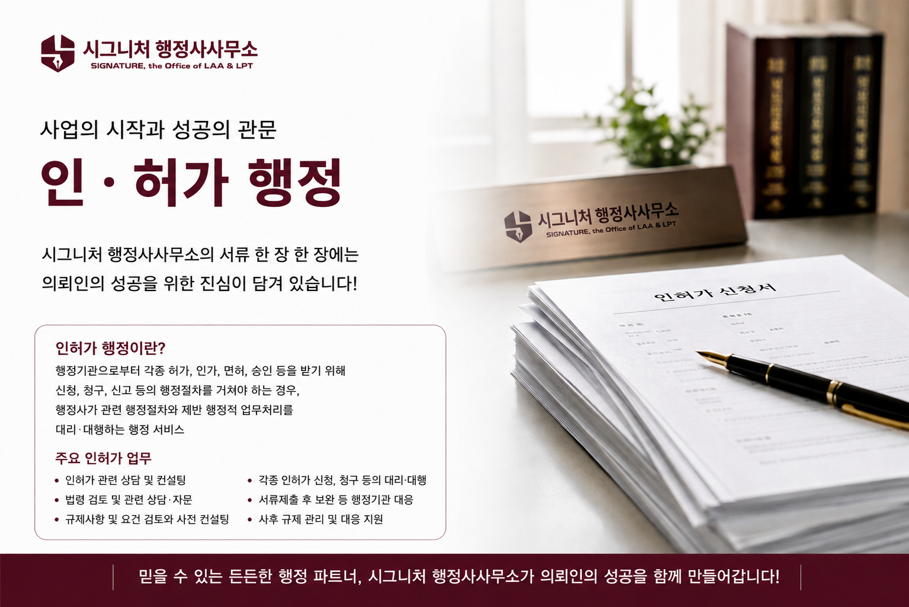
“복잡하고 막막한 각종 행정기관 인·허가, 시그니처 행정사사무소와 함께 하면 길이 열립니다!”
지금 바로 상담 신청하세요!
권익구제 행정
권익구제 행정이란,
행정기관의 위법·부당한 처분 또는 부작위로 인하여 권익을 침해 당한 국민이 관련 행정법률 지식과 법적 소양을 갖춘 행정권익 구제 전문가인 행정사를 통해 해당 처분 또는 부작위의 위법, 부당성을 법리와 증거에 근거하여 주장하고 입증하여 침해 당한 권익을 구제하는 절차와 제도를 말합니다.
권익구제의 수단으로서의 『행정심판 사례』로는 「영업허가 취소·정지」, 「이의신청·집행정지」, 「학교폭력」, 「운전면허 취소·정지」, 「출입국 사범심사」, 「공무원 소청심사」 등이 있습니다.
“믿고 맡기는 순간, 의뢰인의 마음을 든든하게 하는 시그니처 행정사사무소!”
지금 바로 상담 신청하세요!
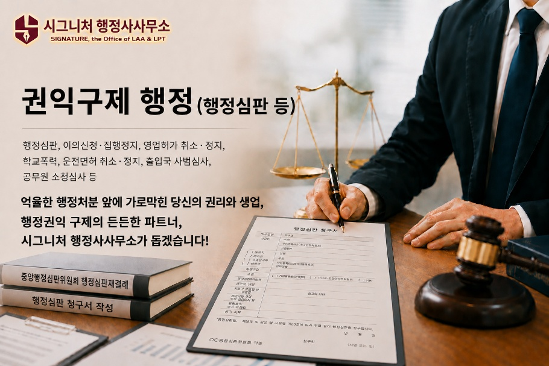
법인·단체 설립 행정
새로운 사업을 시작하거나 뜻을 같이 하는 사람들과 함께 법인이나 단체를 설립하는 것은 마음이 설레는 일일 것입니다.
그러나, 이내 「사단법인」, 「재단법인」, 「영리법인」, 「비영리법인」, 「공익법인」, 「의료법인」, 「농업·어업·산림산업 법인」, 「사회적 기업」, 「사회적 협동조합」, 「임의단체」, 「비영리민간단체」 등의 생소한 용어, 복잡한 설립인가 절차라는 높은 벽과 까다로운 요건에 막막함을 느끼게 됩니다.
설립을 위한 제반사항 사전 검토준비, 정관 작성 및 제반 신청 구비서류 준비, 해당 주무관청 인·허가 신청, 등기 및 사업자등록 절차 등 모든 과정의 업무는 관련 전문성과 경험을 요구합니다.
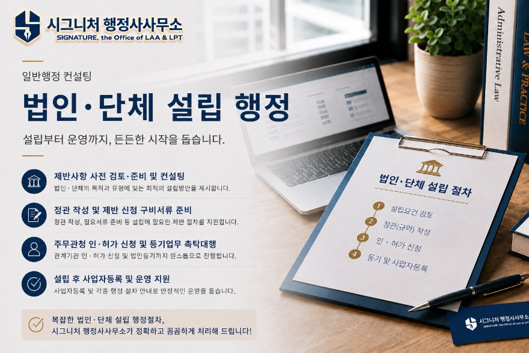
시그니처 행정사사무소는 법인단체 설립 컨설팅을 통해 의뢰인의 법인·단체 설립 첫걸음의 시작과 끝을 성공적으로 지원합니다.
“법인·단체 설립, 시그니처 행정사사무소와 함께 하면 쉬워집니다!”
지금 바로 상담 신청하세요!
기업 행정
기업 행정 업무란,
기업의 경영활동 전반에 대한 기업경영 컨설팅과 그 과정에서 도출된 기업의 경영성과 극대화를 위한 경영 목표와 실현방안을 구체적으로 현실화 하는데 필요한 수단 중 하나로서의 기업인증 취득 등 기업을 대상으로 하는 전문 행정서비스를 말합니다.
따라서 기업 행정은 기업경영 컨설팅을 통해 기업의 목표와 비젼을 달성하는 데 있어서, 기업 경영상의 문제점을 파악하고 그 문제점의 해결과 새로운 기회를 발견하여, 기업경영의 변화와 혁신을 위해 공신력 있는 최적의 맞춤형 기업인증 취득을 통하여 기업의 이미지와 시장경쟁력을 제고하고, 더 나아가 기업의 지속 가능한 성장과 기업의 성공적인 미래를 실현시킬 수 있는 중요한
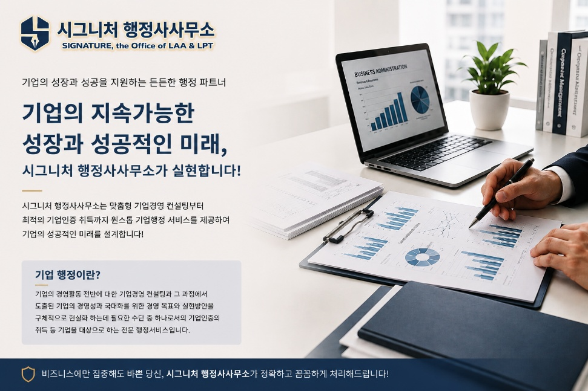
수단이라고 할 수 있습니다.
기업 행정 컨설팅 서비스 업무
기업부설연구소 / 연구개발전담부서 설립
벤처기업 인증
이노비즈(Inno-Biz) / 메인비즈(Main-Biz) 인증
성과공유기업 인증
우수기업부설연구소 인증
ISO 13485 / GMP 인증
소비자중심경영(CCM) 인증
K 마크/GS/GR 인증
소재·부품·장비(소부장) 으뜸기업 인증
식품/축산물 HACCP 인증
친환경농수산물, 농산물우수관리(GAP) 인증
할랄(Halal) 인증
여성기업, 장애인기업, 사회적기업 인증
창업기업, 중소·중견기업, 글로벌강소기업 인증
가족친화기업, 청년친화강소기업 인증
사내근로복지기금 설립 등 기타 업무
시그니처 행정사사무소는 맞춤형 기업경영 컨설팅과 최적의 기업인증 취득 등을 아우르는 원스톱 기업행정 컨설팅 서비스를 제공하여 기업의 성공적인 미래를 설계합니다!
지금 바로 상담 신청하세요!
출입국 민원 행정
출입국 민원 행정 개요
하루가 다르게 급변하는 국제화 시대에 외국인의 국내 체류와 취업, 유학, 투자, 결혼이민, 영주, 국적 등의 출입국 민원 관련 업무가 꾸준히 증가하고 있는 추세입니다. 이에 따라 「비자 발급」, 「체류기간 연장」, 「체류자격 변경」, 「체류자격 외 활동」, 「영주권 신청」, 「국적 취득」 등 다양한 출입국 관련 민원의 수요도 함께 증가하고 있습니다.
하지만, 출입국 업무관련 법령과 지침 등이 복잡하고, 국가의 정책 방향 등에 따라 출입국 관련 업무처리의 내부지침이 수시로 개정·변경되기 때문에 일반인이 진행하기에는 많은 어려움이 있습니다. 자칫 관련 서류 하나의 누락이나 작성상 오류만으로도 심사가 지연되거나 불허될 수 있는 등 크고 작은 문제가 발생할 수 있습니다.
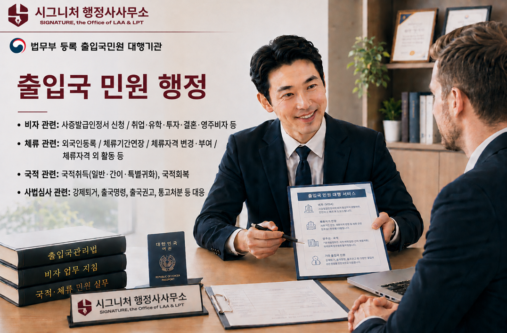
「법무부 등록 출입국민원 대행기관」으로서, 시그니처 행정사사무소는 의뢰인의 상황을 면밀히 검토하고 분석하여 최적의 해결안을 제안하고, 필요한 제반 서류와 절차를 철저하고 꼼꼼하게 준비하여 의뢰인의 출입국 민원을 대행해드립니다.
출입국 민원 관련 법령 등
- • 출입국관리법 / 국적법 / 난민법
- • 재외동포기본법 / 재외동포의 출입국과 법적 지위에 관한 법률
- • 재한외국인 처우 기본법
- • 외국인근로자의 고용 등에 관한 법률
- • 외국인투자 촉진법
- • 벤처기업육성에 관한 특별법 / 벤처투자 촉진에 관한 법률
- • 다문화가족지원법 / 관련 지방자치법규
- • 기타 국제법 상 협약, 규약 및 협정 등
체류자격 분류
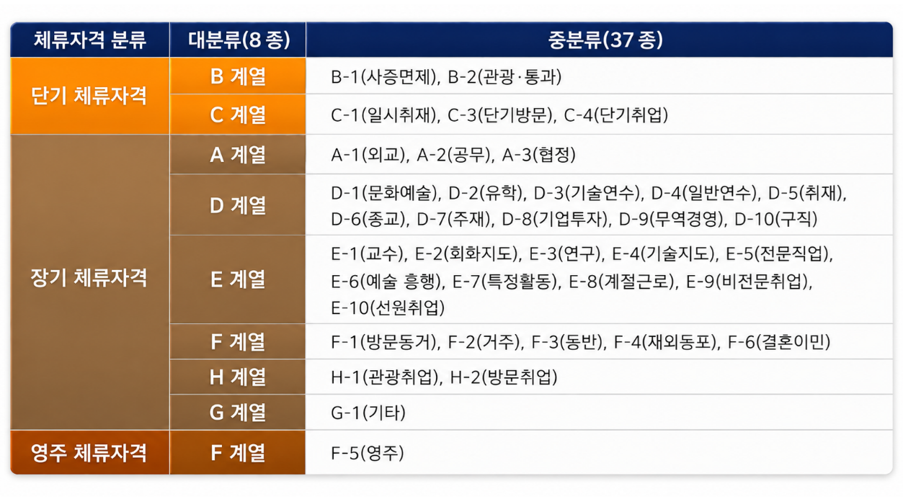
주요 출입국 민원 컨설팅 서비스
- 비자 관련: 사증발급인정서 신청 / 취업·유학·투자·결혼·영주 비자 등
- 체류 관련: 외국인등록 / 체류기간 연장 / 체류자격 변경·부여 / 체류자격 외 활동
- 국적 관련: 국적취득(일반·간이·특별귀화), 국적회복
- 사범심사 관련: 강제퇴거, 출국명령, 출국권고, 통고처분 등 대응
• E-7(특정활동)
- ✓ 전문적인 지식기술 및 기능을 가진 외국인력 도입을 위해 전문/준전문/일반기능/숙련기능 인력으로 도입직종을 구분하여 탄력적으로 운영
- ✓ 외국인력 자격요건: (일반요건) 도입직종 연관 분야 석사 이상, 학사 + 1년 이상 경력, 5년 이상 경력 / (특별우대요건) 세계500대 기업 1년 이상 경력, 세계유수대학 학사, 국내 전문학사, 학사 이상 등
- ✓ 고용업체 요건: 사증발급인정서 발급 제한이 없고 허용직종별 고용업체 요건·고용허용 인원·최소임금 요건 등 충족, 세금체납 사실 없음을 증명
- ✓ 제출서류: 고용업체(고용 필요성 입증서류 - 고용추천서, 초청사유서 등 기타) / 외국인(여권사본, 고용계약서, 자격요건 입증서류 등 기타)
- ✓ E-7-1(전문인력): 67개 직종, 고용업체의 업종과 채용조건이 전문 외국인력의 전공, 경력과 일치성 또는 관련성 필수
• K-POINT E-7-4
- ✓ E-7-4 비자는 한국 사회와 산업에 기여할 수 있는 숙련기능인력을 위한 점수제 비자로, 한국에서 일정기간 근무한 외국인 근로자가 장기적으로 안정된 체류와 취업을 이어갈 수 있도록 마련된 제도
- ✓ 외국인력 필수요건: 최근 10년간 E-9, E-10, H-2로 4년 이상 현 근무처에서 정상 근로 중인 등록외국인 / 현 근무처에서 연봉 2600만원 이상, 향후 2년 이상 E-7-4 고용계약 / 현재 1년 이상 근속중인 기업의 추천 받은 자 / 점수제 총점 300점에서 가점 포함 200점 이상인 자
- ✓ 고용기업 요건: 현재 E-9, E-10, H-2 인력을 1명 이상 정상 고용하고 기존 숙련기능 점수제 적용 고용기업일 것 / 현재 국민고용인원의 30% 이내일 것
• F-2-99
- ✓ 신청대상: A-1(외교)~A-3(협정)까지의 체류자격 이외의 체류자격으로 5년 이상 국내에 계속 체류하여 생활근거지가 국내에 있는 사람
- ✓ 신청요건: 민법상 성년 / 법령 준수 등 품행단정 / 생계유지 능력 / 한국어 능력과 한국 문화의 이해 등 기본 소양
- ✓ 신청대상체류자격: 주 체류자가 D-1, D-5~D-9, E-6-1, E-6-3, E-1~E-5, E-7, D-8 / 주 체류자의 배우자 및 미성년 자녀로 합법 체류 중인 외국인(F-1, F-3)
• F-2-7
- ✓ 신청대상: 상장법인 종사자 / 유망산업분야 종사자 / 전문직 종사자 / 유학인재 / 잠재적 우수인재
- ✓ 공통 심사기준: 결격사유에 해당하지 않을 것 / 평가항목별(나이, 학력, 기본소양, 연간소득) 배점의 합산점수가 80점 이상일 것 / 취업 제한분야에 종사하지 않았을 것 / 결핵 등 전염병 등이 없을 것
- ✓ 제출서류: 여권, 외국인등록증 등 공통서류 / 신청대상별 입증서류 / 점수제 평가를 위한 서류 / 결격사유 심사를 위한 서류 / 외국인등록사항에 따른 서류 등 기타
• F-4
- ✓ 신청대상: 대한민국 국적을 보유하였던 사람으로 외국국적을 취득한 사람 / 부모의 일방 또는 조부모의 일방이 대한민국 국적을 보유하였던 사람으로서 외국국적을 취득한 사람
- ✓ 제한 대상: 특정강력범죄로 형을 선고받은 경우 / 사회적 중대범죄로 금고 이상 형을 선고받은 경우 / 최근 5년 이내 전술한 범죄 이외의 범죄로 금고 이상 형을 선고받은 경우
- ✓ 단순노무 및 사행행위 등 제외, 국내 취업활동 허용
- ✓ 26년 2월 12일부로 H-2, F-4를 F-4로 통합, H-2 신규발급 중단
- ✓ 공통/추가 제출서류: 한국어능력·해외범죄경력 입증자료 등 / 가족관계 입증서류 등 기타
• F-5
- ✓ 신청대상: 민법상 성년으로서 D-7 ~ E-7까지의 체류자격이나 F-2로 5년 이상 국내 체류자 / 국민의 또는 F-5 소지자의 배우자 또는 미성년 자녀로서 2년 이상 국내 체류자 / F-4로 2년 이상 국내 체류자 등 기타
- ✓ 신청요건: 법령 준수 등 품행단정 / 생계유지 및 연간소득 능력 / 한국어 능력과 한국 문화의 이해 등 기본 소양 / 신원보증서 (일부 경우 제외)
• F-6
- ✓ 신청대상: 국내에서 대한민국 국민과 혼인이 유효하게 성립한 상황에서 결혼생활의 지속을 위해 국내 체류를 하고자 하는 사람 / 혼인관계에서 출생한 자녀를 양육하고 있는 부 또는 모인 사람 / 혼인상태로 국내 체류하던 중 그 배우자의 사망이나 실종, 기타 자신의 귀책사유 없이 정상적인 혼인관계 유지가 불가한 사람
- ✓ 신청요건: 초청인의 소득요건
- ✓ 제출서류: 기본서류(통합신청서, 외국인직업신고서, 초청장 등), 대한민국 배우자의 주거요건 및 소득요건 서류, 외국인배우자 의사소통 요건 서류, 교제입증 서류 등 기타
• 귀화에 의한 국적취득
귀화 허가는 일반적으로 다음과 같은 절차를 거쳐 진행됩니다.
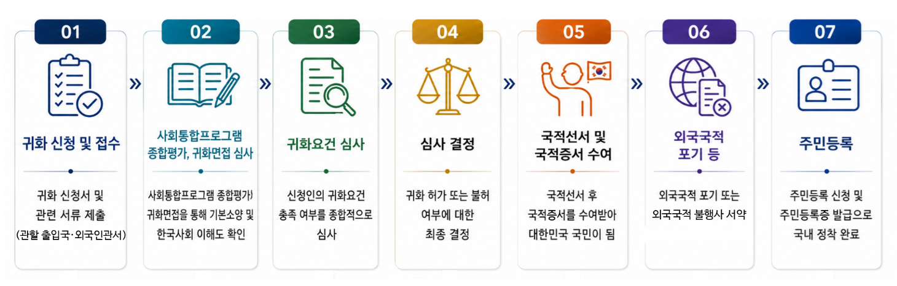
✓ 일반귀화
- - 대한민국 국적을 취득한 적 없는 외국인이 일반 귀화요건을 갖춘 경우, 귀화허가를 받아 대한민국 국적을 취득하는 것
- - 일반요건: 민법상 성년으로서 5년 이상 계속 국내 주소 유지 / 영주권 전치주의(F-5 소지자) / 품행단정, 생계유지능력, 한국어 능력과 한국 풍습의 이해 등 기본소양 구비 / 국가안전보장, 질서유지, 공공복리에 무해할 것
- - 제출서류: 귀화허가 신청서 등 기본서류 / 2인 이상 추천서 / 생계유지능력 입증서류 / 범죄경력 관련 서류 / 가족관계등록부 생성에 필요한 서류 등 기타
✓ 간이귀화
- - 우리나라와 특별한 혈연적, 지연적 관계에 있는 외국인이 일반귀화 보다 수월하게 대한민국 국적을 취득하는 것으로 3년 이상 거주에 의한 간이귀화, 혼인에 의한 간이귀화, 혼인단절에 의한 간이귀화 등
- - 일반요건: 민법상 성년으로서 3년 이상 계속 국내 주소 유지 / 품행단정, 생계유지능력, 한국어 능력과 한국 풍습의 이해 등 기본소양 구비 / 국가안전보장, 질서유지, 공공복리에 무해할 것
- - 제출서류: 귀화허가 신청서 등 기본서류 / 생계유지능력 입증서류 / 범죄경력 관련 서류 / 가족관계등록부 생성에 필요한 서류 등 기타
✓ 특별귀화
- - 부 또는 모가 현재 대한민국 국민인 사람, 대한민국에 특별한 공로가 있는 사람, 과학경제문화체육 등 특정분야에서 매우 우수한 능력을 보유하여 대한민국 국익에 기여할 것으로 인정되는 사람이 귀화를 통해 대한민국 국적을 취득하는 것
- - 제출서류: 귀화허가 신청서 등 기본서류 / 범죄경력 관련 서류 / 가족관계등록부 생성에 필요한 서류 등 기타 서류
• 국적회복
- ✓ 대한민국 국민이었던 사람이 외국국적을 취득하여 대한민국 국적을 상실한 후 다시 대한민국 국적을 회복하는 것으로, 일반 국적회복(중국 제외)과 중국동포 1세 국적회복으로 구분
- ✓ 과거 외국국적 취득 시, 가족관계등록부가 국적상실로 제적되지 않은 경우, 국적회복허가 신청과 국적상실 신고의 동시진행 필요
- ✓ 제출서류: 국적회복허가 신청서, 국적회복진술서, 대한민국국민이었던 사실입증 서류 등 기타 서류
• 출입국 사범심사
- ✓ 국내 체류 중인 체류자격 소지자가 출입국관리법의 위반 행위나 국내에서 범죄를 저지른 경우, 체류지 관할 출입국·외국인관서의 사범과에서 조사 및 심사를 거치는 것으로, 사범심사 결정으로 체류허가 여부 결정 및 강제퇴거, 출국명령, 출국권고, 통고처분 등의 대상이 됩니다.
- ✓ 준비서류: 기본서류(여권, 외국인등록증 등), 탄원서 및 반성문, 준법서약각서 등을 포함한 인도적 사유서 및 법리적 소명서, 기타 서류
“의뢰인의 대한민국 체류의 시작과 정착, 시그니처 행정사사무소가 그 여정을 함께 하겠습니다!”
지금 바로 상담 신청하세요!
공공조달 행정
공공조달 행정은 기업이나 개인이 국가종합전자조달시스템, 나라장터 플랫폼을 비롯한 공공조달 시장에 안정적으로 진입하는데 필요한 행정 절차와 업무를 체계적으로 준비할 수 있도록 돕는 전문 행정 서비스입니다.
「입찰참가자격등록」, 「품목등록/물품식별번호 등」, 「다수공급자계약(MAS)」, 「벤처나라 제품 지정」, 「G-PASS 기업(해외조달시장 진출유망기업) 지정」, 「우수제품 지정」처럼 실제 공공조달 시장 참여에 필요한 세부 실행 전략과 방법을 기업의 현재 상황을 면밀히 검토하고 분석하여, 전략적인 접근 관점에서 최적의 맞춤형 솔루션을 제안해드립니다.
화면의 좌측 하위 메뉴에서 각 분야별 세부 업무를 클릭하시면 관련 정보를 확인하실 수 있습니다.
공공조달 행정 개요
공공조달 행정이란,
국가, 지방자치단체, 각종 공공기관이 공공조달 시장을 통해 필요한 물품, 용역, 공사 등을 구매하는데,
이 때, 기업이나 개인이 공공조달 사업에 참여하기 위해 온라인으로 운영·관리되고 있는 공공조달 시장 시스템에서 발주하는 공공조달 사업에 참여하는데 있어 요구되는 여러 공공조달 행정절차와 제반 구비서류 등을 작성 및 대행하고, 그 진행 절차가 원활하고 성공적인 결과를 이끌어 낼 수 있도록 의뢰인을 조력하는 공공조달 전문 행정 컨설팅 서비스입니다.
화면의 좌측 하위 메뉴에서 각 분야별 세부 업무를 클릭하시면 관련 정보를 확인하실 수 있습니다.
점점 거대해지는 공공조달 시장에의 참여는 단순한 입찰 참여를 넘어, 기업의 지속적이고 안정적인 매출과 성장기회의 확보, 기업의 신뢰도 제고, 사업판로의 확장 등의 기업 경쟁력 측면에서 매우 중요한 기회이며, 특히 중소기업과 혁신기업 등에 대한 공공조달 우대정책이 확대되고 있어 이에 대한 전략적인 접근이 더욱 필요합니다.
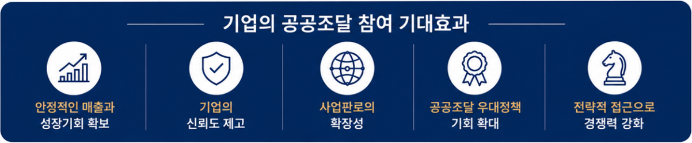
그러나, 현실적으로 공공조달 시장에서 요구되는 여러 행정적 절차들은 복잡한 공공조달 행정시스템, 다양한 관련 법령과 규정 등으로 인해 공공조달 시장에의 진입부터 실제 입찰과 계약 절차 등에 이르기까지 공공조달 행정과 관련한 복합적인 전문지식과 업무처리 능력이 요구되어 많은 기업들이 어려움을 겪고 있는 실정입니다.
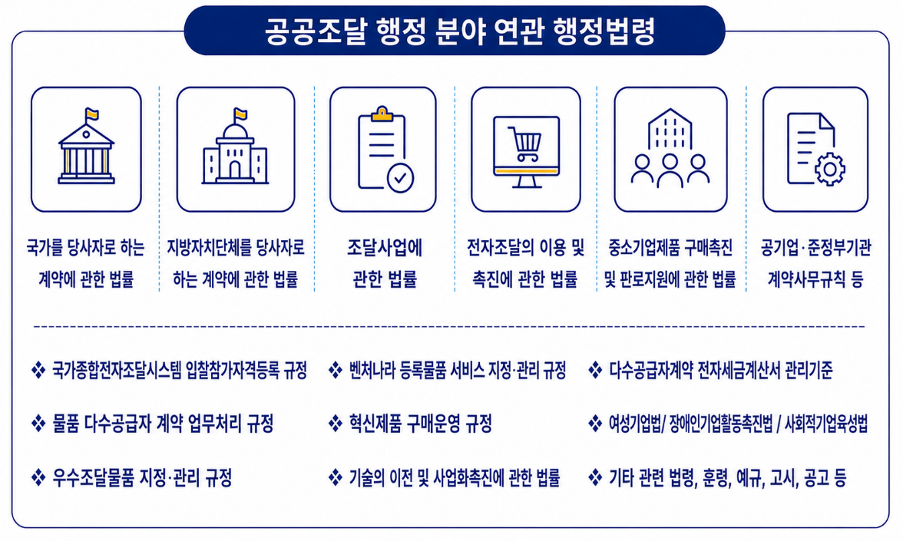
이러한 기업의 어려움을 해결하기 위해, 시그니처 행정사사무소는 기업의 현재 상황을 면밀히 검토하고 분석하여 전략적인 맞춤형 공공조달 행정 컨설팅을 제공합니다.
세부 분야별 업무는 하위 메뉴인 「입찰참가자격등록」, 「품목등록/물품식별번호」, 「다수공급자계약(MAS)」, 「벤처나라 제품 지정」, 「G-PASS기업 지정」, 「우수제품 지정」에서 각각 확인하실 수 있습니다.
“복잡하고 막막한 공공조달 행정은 시그니처 행정사사사무소에 맡기시고, 기업의 대표님은 비즈니스에만 집중하세요!”
지금 바로 상담 신청하세요!
입찰참가자격등록
입찰참가자격등록이란,
기업이 공공조달 시장에서 국가, 지자체, 공공기관이 시행하는 공공조달 입찰에 참여하기 위해 반드시 거쳐야 하는 공공조달 행정절차로,
기업 정보와 온라인 제출서류 등을 구비하여, 조달청의 국가종합전자조달 시스템인 나라장터(G2B)에서 사용자 등록을 통한 입찰참가자격등록을 신청한 후 조달청의 승인을 받는 절차입니다.
공공부문이 발주하는 각종 공공조달 사업에 참여하기 위해 기업이 갖춰야 하는 “공공조달 출입증”이라고 할 수 있으며, “공공조달 시장에 진입하기 위한 관문”이라고 할 수 있습니다.
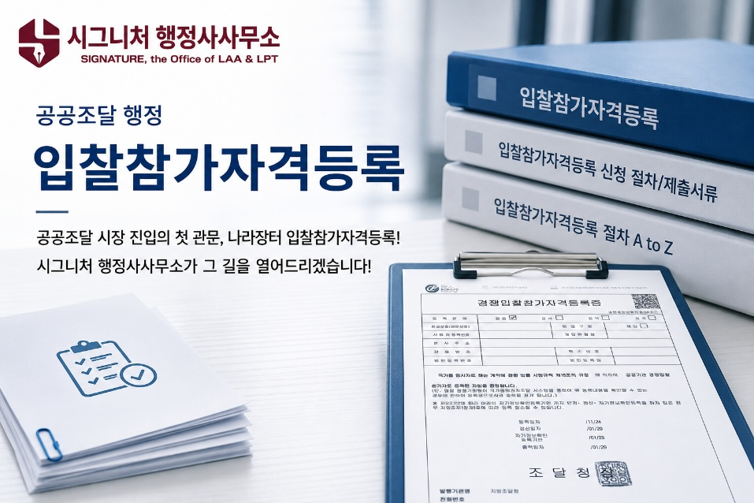
입찰참가자격 등록이 승인된 이후에야, 비로소 공공조달 시장의 출입문이 열리고 기업은 나라장터 등을 통한 공공조달 시장에서 입찰과 계약을 체결할 수 있습니다.
즉, 경쟁입찰참가자격등록은 “공공시장 진입을 위한 첫 관문”이라 할 수 있습니다.
입찰참가자격등록을 위한 자격 요건
「국가종합전자조달시스템 입찰참가자격등록 규정」에 따라 기업이 공공조달 입찰참가자격을 등록하기 위해서는 기본적으로 아래와 같은 법적, 행정적 요건을 충족해야 합니다.
•
사업자 종류
개인사업자, 법인사업자 모두 신청 가능합니다.
•
법령상 제한사유가 없을 것
부정당업자 제재, 입찰참가 제한 처분, 세금 체납, 국가계약법 등 관련 법령 위반 등의 법적 제한사유가 없어야 합니다.
•
인·허가 및 면허 보유 여부 (해당 시)
등록 신청하고자 하는 업종이 법령상 특정 면허나 인허가를 요구하는 경우, 해당 자격을 반드시 증명해야 합니다.
•
신용 상태
기업의 신용등급이 입찰 자체를 제한하지는 않으나, 향후 적격 심사 등에서 중요한 평가 요소가 되므로 관리가 필요합니다.
입찰참가자격등록 신청 절차
기업이 공공조달 시장에서 입찰참가자격등록을 신청하기 위해서는 크게 다음의 5단계의 절차를 거치게 됩니다.
• 1 단계 - 사업자용 인증서 발급 및 기업에 대한 기본정보 준비
• 2 단계 - 나라장터(G2B) 사용자 등록(회원 가입)
• 3 단계 - 입찰참가자격 등록 신청
• 4 단계 - 등록 신청을 위한 온라인 서류 제출
• 5 단계 - 조달청의 등록 승인
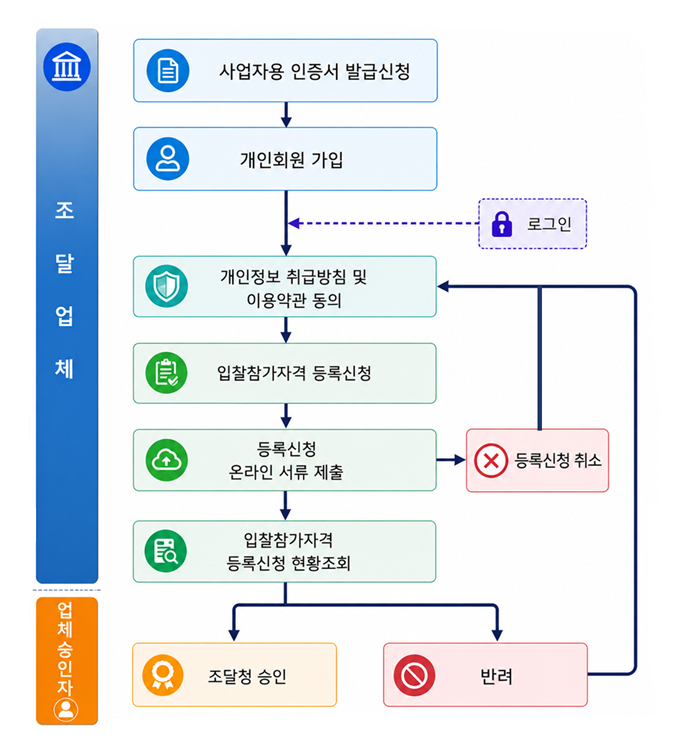
“공공조달 시장 진입의 첫 관문, 나라장터 입찰참가자격등록!”
“시그니처 행정사사무소가 그 길을 열어드리겠습니다!”
지금 바로 상담 신청하세요!
품목등록/물품식별번호
품목등록(물품등록) 관련 용어
- 품명 - 물품을 기능, 용도, 성질에 따라 분류하여 번호를 매긴 “물품분류번호에 대응하는 물품 유형의 이름”
- 품목 - 물품을 생산자 및 물리적·화학적 특성(모델)에 따라 고유한 번호로 분류한 “물품식별번호에 대응하는 물품의 이름”
- 품목등록 - 기업이 공공조달 시장에 공급하고자 하는 “새로운 상품의 물품식별번호를 발급 받는 것”을 말하며, 목록화 요청(품목등록 요청)을 통하여 물품식별번호를 발급받아 품목등록이 이루어집니다.
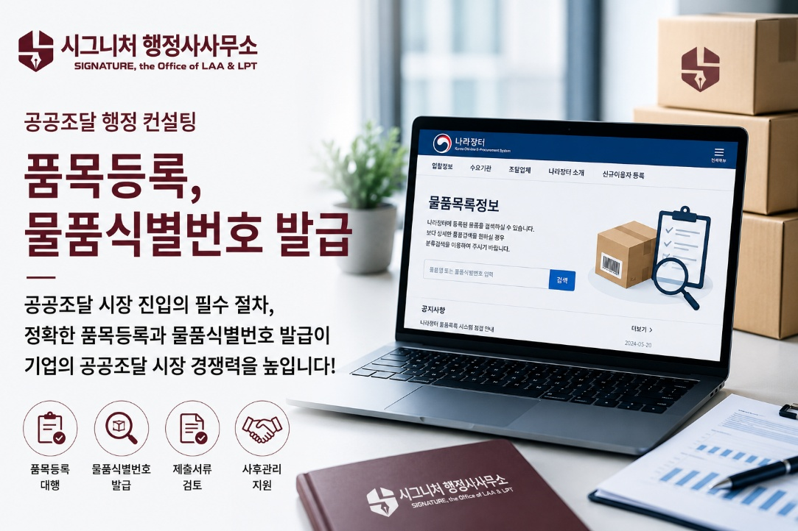
- 품목등록 요청 - 조달청의 물품목록시스템에 존재하지 않는 새로운 품명(물품분류번호)의 신설을 요청한 후 해당 품목의 등록을 요청하는 것으로, “목록화 요청”이라고도 합니다.
- 물품식별번호 - 목록정보시스템에서 물품의 품명번호(8자리)와 해당 세부품명에 따라 구분되는 속성을 포함한 해당 “물품의 고유한 식별번호(8자리)”
- 물품분류번호 - 물품을 기능, 용도, 성질에 따라 분류하여 부여한 번호
- 물품식별번호 - 물품을 생산자 및 물리적·화학적 특성(모델)에 따라 분류하여 부여한 번호
- 물품목록번호 - 물품분류 체계상 2자리씩 4단계의 계층구조로 이루어진 8자리 숫자로 된 물품분류번호와 차례로 배열된 8자리 숫자로 된 물품식별번호로 구성
- 물품목록번호 = 물품분류번호 + 물품식별번호
품목등록(물품식별번호 발급) 요청 전 사전 필요사항
- 목록화 요청은 조달업체(제조 또는 공급물품)와 수요기관 모두 가능합니다.
- 국가종합전자조달시스템 나라장터에서 이용자 등록 후 경쟁입찰참가자격 등록(제조 또는 공급물품)을 합니다.
- 품목등록 요청 시 제조업체는 나라장터 경쟁입찰참가자격 등록증에 목록화 요청을 하고자 하는 해당 세부품명이 제조물품으로 등록되어 있어야 합니다.
- 품목등록 요청 시 공급업체는 품목등록 하려는 물품의 제조업체가 경쟁입찰참가자격등록증 상에 해당 물품의 세부품명을 제조물품으로 기재하고 있어야 합니다.
- 품목등록을 요청하려는 물품의 세부품명이 분류되어 있지 않은 경우, 목록정보시스템에서 목록화 요청 ? 품명등록 요청으로 세부품명 신설이 가능합니다.
품목등록 요청 전 확인사항
- 품목등록 요청을 하기 전에, 조달청 목록정보시스템에서 해당 품목의 기 등록여부를 확인해야 하는데 다음의 2가지 방법으로 가능합니다.
-
✔
지능형 검색(검색엔진 검색):
목록정보시스템에 구비된 검색어 사전을 이용하여 검색하는 방법으로 해당 물품에 대한 일부 정보만 입력해도 연관된 품목/분류 정보를 검색할 수 있습니다.
-
✔
일반 검색(데이터베이스 검색):
실제 등록된 값과 일치하는 항목을 검색하는 방법으로 품목/품명검색, 물품안내지도, 이력검색 등 다양한 검색이 가능하게 합니다.
- 기 등록여부 검색 결과, 해당 물품이 없는 경우에는 품목등록이 가능하며, 동일한 물품은 중복 등록이 불가합니다.
신규 품목등록 요청 방법
- 개별요청: 등록하고자 하는 품목의 건수가 10건 미만인 경우
- 일괄요청: 등록하고자 하는 품목이 동일 품명이고 10건 이상인 경우
- 기존요청 참조등록: 기존에 요청한 정보를 활용하여 신규로 등록하는 경우
- 검색화면에서 참조등록: 기 등록된 품목의 검색정보를 활용하여 신규로 등록하는 경우
품목등록 요청(목록화 요청) 절차
조달청 목록정보시스템의 메인 페이지 상단 중앙 부분에 “목록화요청” 메뉴 〉“품목등록(식별번호 발급)” 하위 메뉴에서 요청하는 것으로 다음의 2가지 경우로 구분합니다.
-
적합한 분류가 있는 경우:
품목등록 요청 ? 검토 및 보완 요구(필요시) ? 품목등록 완료
-
적합한 분류가 없는 경우:
품목등록 요청 ? 반려 ? 품명등록 요청 ? 상품목록심의회 심의 ? 품명신설 ? 제조업체가 입찰참가자격증에 제조물품으로 등록 ? 품목등록 요청 ? 검토 및 보완 요구(필요시) ? 품목등록 완료
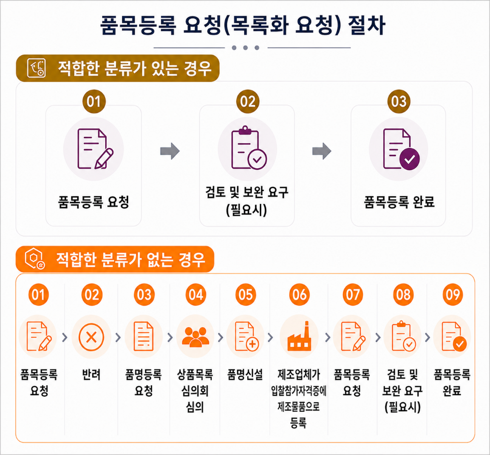
“공공조달 시장 진출, 품목등록과 물품식별번호 발급이 그 시작입니다!”
“제품만 준비하시고, 나머지는 시그니처 행정사사무소에 맡기세요!”
지금 바로 상담 신청하세요!
다수공급자계약(MAS)
다수공급자계약(MAS, Multiple Awards Schedule)란,
공공조달 행정에서 기존의 최저가1인 낙찰자 선정 방식에는 품질 저하와 다양성 부족 등의 지속적인 문제점이 있었습니다.
이에 따라 조달청은 “품질, 성능 및 효율 등이 동등하거나 유사한 종류의 물품을 대상으로 2인 이상 다수의 공급자를 선정하여 가격과 품질 측면에서 건전한 경쟁을 유도하고, 동시에 수요기관의 선택권을 확대하기 위해 다수공급자계약(MAS)” 제도를 마련하였습니다.
다수공급자계약(MAS)에서는 일정 수준 이상의 납품실적과 경영상태 등 자격요건을 충족한 업체를 대상으로 협상을 거쳐 계약이 체결되며, 계약이 완료된 제품은 나라장터 종합쇼핑몰에 등재됩니다. 수요기관은 나라장터 종합쇼핑몰을 통해 원하는 물품을 자유롭게 검색, 비교, 선택하여 구매할 수 있게 되었습니다.
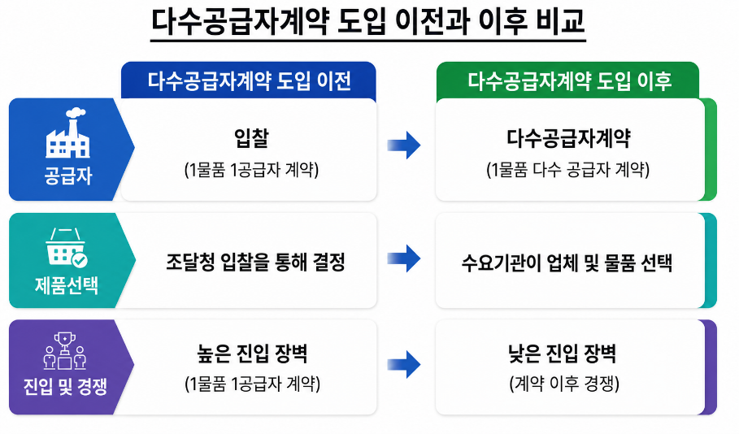
다수공급자계약(MAS) 대상 품목 및 계약 기간
다수공급자계약의 대상 품목은 아래와 같고, 계약 기간은 원칙적으로 3년입니다.
- 규격(모델)이 확정되고 상용화된 물품
- 연간 납품실적이 3천만원 이상인 업체가 3개사 이상일 것
- 업체 공통의 상용규격 및 시험기준이 존재할 것
- 단가계약(제3자 단가계약 포함)이 가능한 물품
- 기타 조달청장이 필요하다고 판단하는 물품 등
다수공급자계약(MAS) 관련 법령 등
다수공급자계약 제도의 근거가 되는 관련 행정 법률과 시행령, 및 행정규칙(훈령·공고·고시 등)은 다음과 같습니다.
법률 및 시행령
- 조달사업에 관한 법률 제13조(다수공급자계약)
- 조달사업에 관한 법률 시행령 제13조(다수공급자계약)
훈령·공고·고시 등
- 물품 다수공급자계약 업무처리규정(훈령, ’23.7.1., 2단계경쟁 업무처리기준 통합 개정)
- 물품 다수공급자계약 특수조건(공고, ’23.7.1., 2단계경쟁 업무처리기준 통합 개정)
- (물품별) 다수공급자계약 추가특수조건(공고)
- 국가종합전자조달시스템 종합쇼핑몰 운영규정(고시)
- 다수공급자계약 전자세금계산서 관리기준(고시) - ※ 기존 11종 MAS관련 규정을 5종으로 통폐합
- 기타 관련 규정: 물품구매계약 품질관리 특수조건(공고) 등
다수공급자계약(MAS)의 단계별 업무 절차
다수공급자계약의 일반적인 업무진행 절차를 이해하기 쉽게 도식화하면 아래와 같습니다.
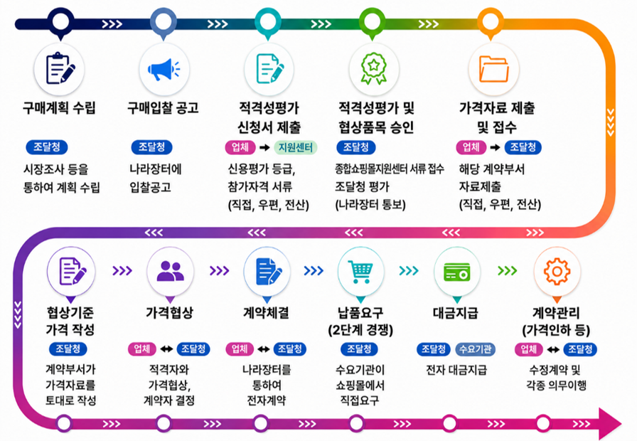
지금까지 살펴본 바와 같이 다수공급자계약을 통하여 나라장터 종합쇼핑몰에 여러 기업의 제품들이 나란히 올라가고, 공공기관은 그 중에서 원하는 제품을 자유롭게 선택하여 직접 구매할 수 있는 구조입니다.
즉, “한 번 다수공급자계약이 성사되면, 공공조달 시장에서 기업이 안정적인 판로를 통한 지속적인 매출을 확보할 수 있는 매우 중요한 기회”입니다.
“다수공급자계약으로 공공조달 시장진출의 기회를 잡으세요!”
지금 바로 상담 신청하세요!
벤처나라 제품 지정
벤처나라란,
국가에서 우수한 벤처기업과 창업기업의 공공 구매 촉진과 판로 개척을 통한 안정적인 매출 확보 및 성장기반 구축을 지원하기 위해 2016년 10월 구축한 나라장터 연계 “벤처·창업기업 전용 온라인 상품몰” 플랫폼으로,
수요기관과 벤처·창업기업 간에 온라인 직접 거래가 가능한 “오픈마켓”으로 뛰어난 기술력을 가지고 있음에도 불구하고, 생산한 상품의 홍보, 판매에 어려움을 겪고 있는 벤처기업과 창업기업을 대상으로 한 전용 온라인 홍보 및 판매의 공간이자 거래의 장입니다.
벤처창업기업 제품이란, (이하, 벤처나라 제품)
산업통상부, 중소벤처기업부, 창조경제혁신센터 등 국내 신산업 및 신생 중소기업의 판로개척을 지원하는 기관들이 발굴하고 추천한 후보 상품을 대상으로 조달청의 최종심사를 거쳐 선정된 우수 벤처·창업기업 제품입니다.
벤처나라 제품 지정 대상
중소기업자 중 벤처기업, 창업기업이 직접 생산하거나 OEM(주문자상표부착생산) 방식으로 생산하는 물품 및 서비스로서, 조달청이 벤처나라 제품으로 지정하여 공공기관에 납품이 가능한 소비재 완성품(물품의 경우) 및 서비스를 지정 대상으로 합니다.
벤처나라 제품 지정 절차
벤처나라 제품의 지정을 받기 위한 공공조달 행정 절차를 이해하기 쉽게 도식화하면 아래와 같습니다.
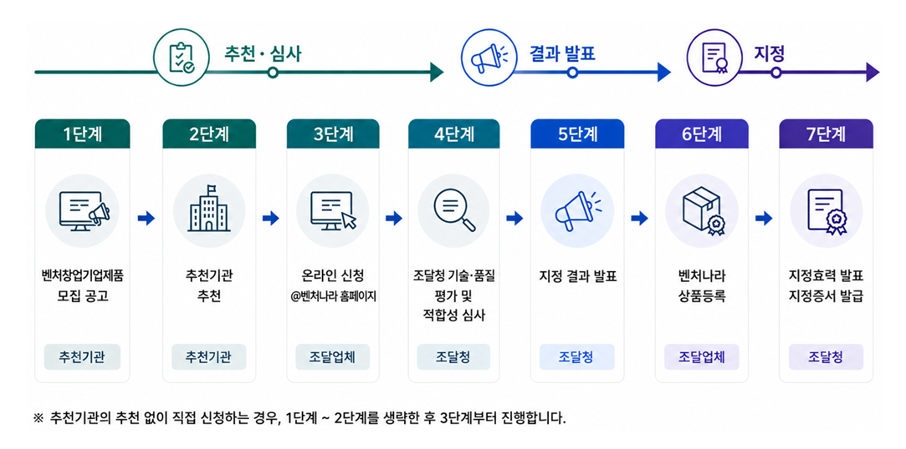
벤처나라 제품 지정 신청 시 제출 서류
- 벤처나라 제품 지정 신청서 및 서류제출 신뢰 서약서
- 사업자등록증 또는 법인등기부등본
- 벤처기업확인서, 창업기업확인서
- 상품설명서
- 법정 및 품질 인증제품 납품확약서
- 기술평가 증빙 자료 (특허, 실용실안 등 사본)
- 품질평가 증빙 자료(품질 인증서 사본, 공인시험기관의 시험성적서 등)
- 기술·품질평가 면제 관련 소명자료(평가 면제 대상인 경우)
- 기타 증빙 서류 등(해당하는 경우)
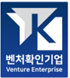
벤처나라 제품의 등록 및 거래 절차
벤처나라 제품의 지정을 받은 후, 벤처나라 제품을 조달청 벤처나라 플랫폼에 상품을 등록하고 본격적인 판매 및 거래활동을 할 수 있게 됩니다.
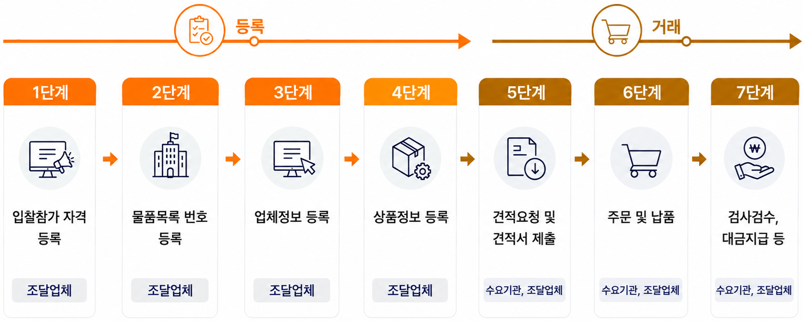
벤처나라 제품 지정 시 혜택
조달청으로부터 벤처나라 제품으로 지정을 받는 경우, 다음과 같은 다양한 혜택을 통해 공공조달 시장에서의 벤처·창업기업의 경쟁력 확장과 성장기회가 가속화될 수 있는 좋은 발판을 마련할 수 있습니다.
- 벤처나라 제품 지정증서 발급 및 인증마크 제공
- 나라장터 엑스포 개최 시 벤처나라 전용부스 운영 지원 및 해외 바이어·공공기관과 구매상담회 개최
- G-PASS 제도를 통한 해외조달 시장 진출 지원
- 전담관제 지정을 통한 공공조달 시장 진입 맞춤형 서비스 제공
- 우수조달물품 지정 시 벤처나라 실적 기업 신인도 가점 1점 부여
- SGI서울보증의 이행보증보험 2년간 5억원의 무담보 보증보험 제공
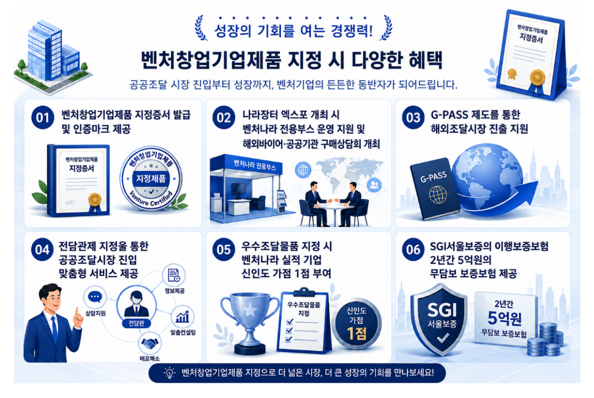
“벤처창업기업의 뛰어난 기술력과 혁신성을 공공조달 시장으로!”
“시그니처 행정사사무소가 벤처나라 제품 지정의 길을 열겠습니다!”
지금 바로 상담 신청하세요!
G-PASS기업 지정
G-PASS(Government Performance Assured) 기업이란,
「조달사업에 관한 법률」 제28조에 따라 조달청장이 해외조달시장 진출을 지원하기 위해 선정하는 국내 중소, 중견기업(“해외조달시장 진출 유망기업”)을 의미합니다.
G-PASS기업 지정 제도
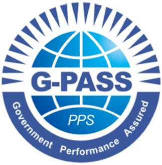
조달청이 국내 공공조달 시장을 통하여 기술력과 신뢰성이 검증되고, 해외수출 경쟁력을 갖춘 기업들을 대상으로 “해외조달시장 진출 유망기업”으로 지정하여 지원하는 제도이며, 2013년에 지정 제도를 시작하여 매월 관세청으로부터 제공받는 지정 기업의 수출실적에 근거하여 관리하고 있습니다.
G-PASS기업 지정 대상, 지정기간 및 지정 신청기간
-
지정 대상:
국내 공공조달 시장에서 기술력과 신뢰성을 인정받고 해외수출 경쟁력을 갖추고 국가종합전자조달시스템에 입찰참가자격을 등록한 중소, 중견기업을 대상으로 합니다.
-
지정 기간:
지정기간은 G-PASS기업 지정일로부터 5년으로 하고, 재지정을 통해 최대 2회 연장이 가능합니다.
-
지정 신청기간:
G-PASS기업 지정심사는 분기별 1회(3월, 6월, 9월, 12월) 진행되므로 지정 목표로 하는 분기의 제출 마감일까지 필요 구비서류 제출 및 보완이 모두 완료되어야 합니다.
G-PASS기업 지정 제도 관련 법령 및 규정 등
-
조달사업에 관한 법률 제28조(국제조달 협력 및 해외 조달시장 진출 지원)
- ① 조달청장은 조달시장의 공정한 경쟁 환경 조성을 위하여 국내 관련 기관 및 각국 조달기관과의 교류·협력을 확대하고, 국내기업의 해외 조달시장 진출을 지원할 수 있습니다.
- ② 제1항에 따른 국내기업의 해외 조달시장 진출 지원 절차와 방법, 그 밖에 필요한 사항은 대통령령으로 정합니다.
-
조달사업에 관한 법률 시행령 제34조(해외 조달시장 진출에 대한 지원)
- ① 해외 조달시장 및 공공입찰에 관한 정보 제공
- ② 국내기업의 해외 조달시장 진출 역량을 강화하기 위한 교육훈련
- ③ 그 밖에 국내기업의 해외 조달시장 진출에 필요하다고 인정한 사항에 관한 지원
-
해외조달시장 진출유망기업 지정관리규정(조달청 고시)
- ① 「조달사업에 관한 법률」 제28조에 따라 조달청장이 해외조달시장 진출을 지원하기 위해 선정하는 국내 기업(이하 “해외조달시장 진출유망기업(G-PASS기업)”이라 한다)의 지정·관리 및 지원에 필요한 사항을 정함을 목적으로 합니다.
G-PASS기업 지정 절차
G-PASS기업의 지정을 신청하는 기업은 지정 신청서를 정부조달수출진흥협회(이하, 협회)에 제출하고 협회는 제출된 서류에 대한 검토 및 보완 요청을 합니다.
협회는 신청기업이 현장 역량진단 대상에 해당하는 경우, 해당 기업을 방문하여 기업의 해외조달시장 진출 역량을 현장 역량진단(현장 실태조사)을 통하여 수행하고 1차, 2차 심사 후 지정 결과와 지정기업의 등급을 발표함으로써 G-PASS기업으로 지정하게 됩니다.
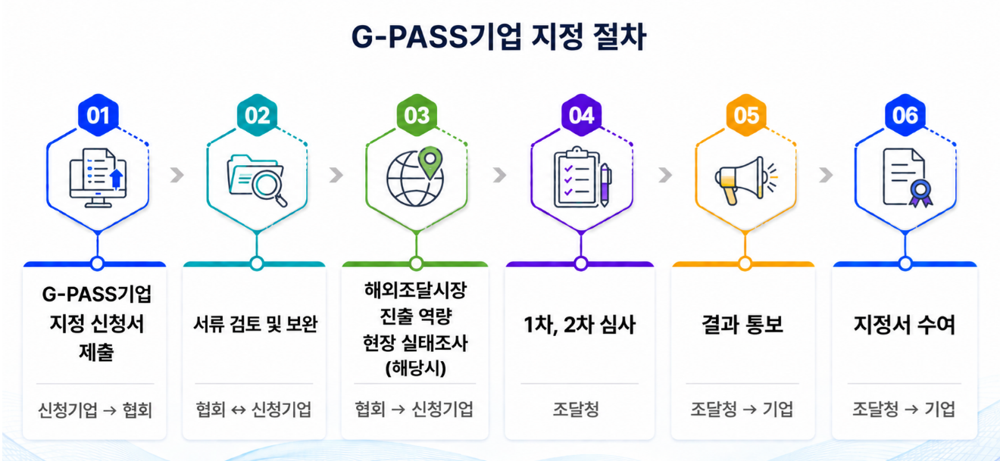
G-PASS기업 지정 혜택
-
•
G-PASS기업 지정증서 발급 및 인증마크 제공 활용
-
•
국내조달시장 참여 우대(단, C등급은 우대 제외)
- 우수조달물품제도 신인도 가점(+1)
- 조달청 물품구매적격심사 및 중소기업자간 계약이행능력심사 신인도 가점(+1)
- 물품 다수공급자계약 2단계 경쟁 우대(최대 +7.5점)
- 용역 카탈로그 계약 종합평가 우대(최대 +5점)
-
•
조달청 수출지원 프로그램 우대
- 전략기업 육성사업, 해외전시회 참여 지원 등
-
•
수출 유관기관 협업 프로그램 우대
- 기술보증기금 : 기술보증 수수료 인하(0.3%), 보증심사 우대 등
- 기업은행 : 환율 60% 우대 및 수수료 50% 감면, 지원사업 연계 등
- 산업은행 : 맞춤형 상품정보 제공 및 해외송금 수수료 50% 감면 등
- 한국수출입은행 : 히든 챔피언 프로그램 선정 우대 등
- 무역보험 공사 : 보증 한도 1.5배 확대, 신용조사 수수료 면제 등
“해외조달시장 진출의 관문, G-PASS기업 지정!”
“시그니처 행정사사무소가 글로벌 기업 경쟁력의 날개를 달아드리겠습니다!”
지금 바로 상담 신청하세요!
우수제품 지정
우수조달물품(이하, 우수제품) 지정 제도란,
1996년에 도입된 조달청 우수제품 지정 제도는 공공조달 물자의 품질향상을 위하여 중소기업 및 초기 중견기업이 생산한 제품 중 기술력과 품질이 우수한 제품을 대상으로 엄격한 평가를 거쳐 우수제품으로 지정하는 제도이며,
우수제품으로 지정된 제품은 국가계약법령에 따라 공공조달 계약을 체결하여 다양한 수요기관에 우수제품을 조달하게 됩니다.
우수제품 지정 대상 제품 및 지정기간
「조달사업에 관한 법률」 제26조에서 규정한 중소기업 및 초기 중견기업이 생산한 물품과 소프트웨어를 대상으로 「우수조달물품 지정관리 규정」 제4조 제2항에 따른 인증 및 특허 등 적용기술이 적용된 제품을 대상으로 합니다.
지정기간은 우수제품 지정일로부터 3년으로 하고, 업체가 연장을 요청할 경우 제품의 품질 및 기술인증, 납품실적, 수의계약 가능 여부, 수출실적 등을 고려하여 최대 3년간 연장이 가능합니다.(연장조건 중복 불가)
우수제품 지정 신청 시 제출 서류
- 우수제품 지정 신청서
- 중소기업확인서 또는 중견기업 확인서
- 경쟁입찰참가자격등록증
- 신용평가등급확인서
- 기술소명 자료 [특허 및 실용등록신안 권리증서(등록증), 등록원부(등본) 및 등록공부 사본 / NEP, NET 인증서 사본 및 종합평가보고서 / GS인증 적용 저작권등록 SW의 경우, GS인증서, 시험결과서, 저작권 등록증(구 프로그램 등록증) 등]
- 품질소명 자료 [성능인증(EPC), 우수재활용인증(GR), 환경표지(환경마크), K마크, 우수품질 소프트웨어(GS) 등]
- 품질인증서 사본, 인증 관련 종합평가보고서, 공인시험기관의 시험성적서 등
- 기타 증빙 서류 등(해당하는 경우)
우수제품 지정 절차
우수제품의 지정 절차는 아래의 도식화한 흐름도와 같습니다.
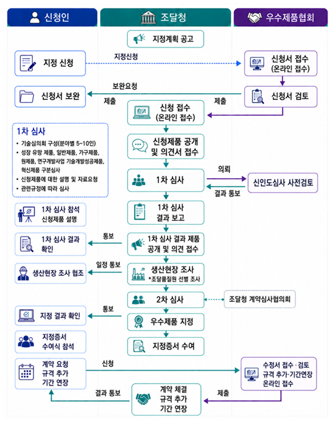
“뛰어난 기술력과 우수한 품질 경쟁력을 갖춘 당신의 기업,
「우수제품 지정」으로 공공조달 시장에서 「시그니처 기업」으로 만들어 드리겠습니다!”
지금 바로 상담 신청하세요!!!
손실보상 행정
토지 등 손실보상은 공공필요에 의한 공익사업의 시행으로 인해 개인 등(토지소유자 또는 관계인)이 입은 손실에 대해 사업시행자가 「공익사업을 위한 토지 등의 취득 및 보상에 관한 법률(토지보상법)」에 따라 보상하는 제도이고,
산업재해 보상은 「산업재해보상보험법(산재보험법)」에 의거하여 근로자가 업무상의 사유로 인해 부상, 질병, 장해를 입거나 사망한 경우, 국가가 사회보험 제도를 통해 신속하고 공정하게 치료와 보상 등을 하는 제도입니다.
화면의 좌측 하위 메뉴에서 각 분야별 세부 업무를 클릭하시면 관련 정보를 확인하실 수 있습니다.
토지 등 손실보상
토지 등 손실보상(이하, 손실보상)의 개요
손실보상이란, 공공필요에 의한 적법한 행정작용에 따른 공권력 행사에 의하여 특정 국민의 재산에 가해진 특별한 희생(손해)에 대해 국민의 사유재산권 보장과 전체적인 공평부담의 견지에서 행해지는 재산적 보상을 의미합니다.
헌법 제23조제3항에 “공공필요에 의한 재산권의 수용·사용 또는 제한 및 그에 대한 보상은 법률로써 하되, 정당한 보상을 지급하여야 한다.”라고 규정하고 있으며, 이 같은 헌법조항을 기초로 하여 전통적인 의미의 손실보상의 근거 법령인 「공익사업을 위한 토지 등의 취득 및 보상에 관한 법률」이 있습니다.
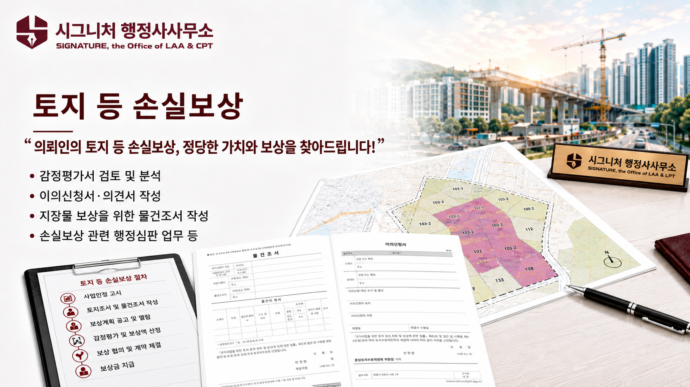
손실보상 관련 법령 및 규정 등
- • 헌법 제23조제3항
- • 공익사업을 위한 토지 등의 취득 및 보상에 관한 법률
- • 국토의 계획 및 이용에 관한 법률/산업입지 및 개발에 관한 법률
- • 도시개발법/도시 및 주거환경정비법/도로법/하천법
- • 감정평가에 관한 규칙/감정평가 실무기준/표준지 조사·평가 기준/토지·영업손실보상평가지침 등
손실보상의 원칙
- • 사업시행자 보상의 원칙
- • 사전보상의 원칙
- • 현금보상의 원칙
- • 개인별 보상의 원칙
- • 일괄보상의 원칙
- • 사업시행 이익과 상계금지의 원칙
- • 개발이익 배제의 원칙
- • 시가보상의 원칙
손실보상의 절차
공공필요에 의한 공익사업을 위해 토지 등의 손실보상은 일반적으로 아래의 흐름도과 같은 절차를 거치게 됩니다.
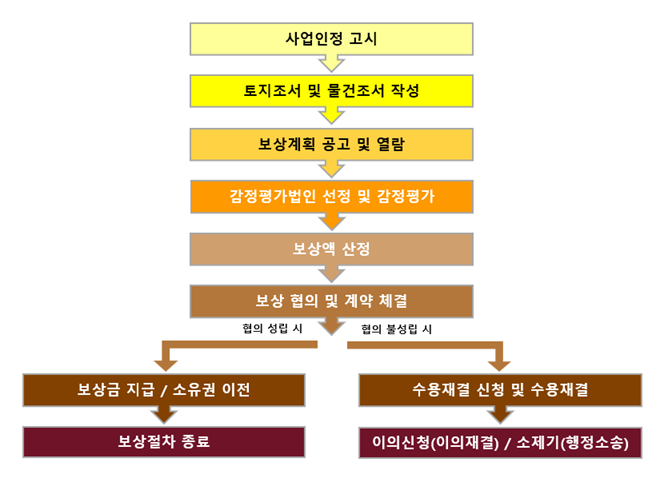
손실보상의 유형
-
•
토지에 대한 손실보상
- ✓ 취득(수용)하는 토지, 사용하는 토지, 잔여지 등에 대한 보상
- ✓ 일반적인 토지 보상액은 가격시점에서의 현실적 이용상황과 일반적 이용방법에 의한 객관적인 상황을 고려하여 산정
-
•
지장물에 대한 손실보상
- ✓ 건축물·입목·공작물과 그 밖에 토지에 정착한 물건에 대하여는 이전에 필요한 비용으로 보상
- ✓ 건축물 보상은 건축물의 구조·이용상태·면적·내구연한·유용성 및 이전 가능성 그 밖에 가격형성에 관련되는 제 요인을 종합적으로 고려하여 평가한 금액으로 보상액을 결정
- ✓ 1989년1월24일 이전에 건립된 무허가 건축물은 이주대책 대상에 포함시켜 보상
- ✓ 수목보상은 사업시행지구 밖의 지역으로의 이전비용(굴취비, 운반비, 부대비용 등)으로 보상
- ✓ 과수 그 밖에 수익이 나는 나무 또는 관상수에 대하여 수종, 규격, 수령, 수량, 식수면적, 관리상태, 수익성, 이식가능성 및 이식의 난이도 그 밖에 가격형성에 관련되는 제 요인을 종합적으로 고려하여 보상 (단, 임야 상의 소나무 및 잡목 등 자연수목은 경제적 가치를 인정하지 않고 토지보상에 포함하여 평가)
-
•
영업의 손실보상
-
✓
손실보상 대상 영업
- - 사업인정고시일등 전부터 적법한 장소에서 인적, 물적 시설을 갖추고 계속적으로 행하고 있는 영업
- - 사업인정고시일등 전에 관련 법령에 의한 허가 등을 받아 그 내용대로 행하고 있는 영업
- - 무허가건물에서 사업인정고시일 등 1년 전부터 사업자등록을 한 임차인
- ✓ 휴업 손실보상 - 공익사업의 시행에 의해 영업장소의 이전으로 인한 영업손실은 휴업기간의 영업이익과 영업장소 이전 후 영업이익 감소액에 휴업기간 중 영업용 자산의 감가상각비, 유지관리비와 휴업기간 중 필수근무 최소 인원에 대한 인건비와 영업시설·원재료·제품 및 상품의 이전비용 및 감손상당액, 이전광고비 및 개업비 등에 소요되는 부대비용 등을 합한 금액으로 보상 평가 (휴업기간은 4개월 이내로 하되, 이전시킬 영업장소의 고유한 특성이 인정되는 경우 실제 휴업기간으로 하나 2년 초과 불가)
- ✓ 폐업 손실보상 - 2년간의 영업이익(또는 개인영업소득)에 영업용 고정자산, 원재료, 제품 및 상품의 매각손실액을 더한 금액으로 보상
-
✓
-
•
농업의 손실보상
- ✓ 공익사업지구에 편입되는 농지에 대해 연간 농가평균 단위 경작면적당 농작물 총수입 또는 실제소득의 2년분을 곱하여 산정한 금액으로 보상
- ✓ 보상 제외 대상 - 사업인정 고시 이후 농지로 이용되는 토지, 일시적으로 이용되고 있는 토지, 타인 소유의 토지를 불법 점유하여 경작하고 있는 토지, 농민이 아닌 자가 경작하고 있는 토지
-
•
권리의 보상
- ✓ 광업권, 어업권은 투자비용, 예상수익 및 거래가격 등을 고려하여 책정한 적정가액으로 보상
-
•
기타 보상
손실보상 컨설팅 서비스 업무
-
•
이의신청서 작성 대행
- ✓ 보상계획 및 열람 공고와 관련하여 토지조서와 물건조서를 열람하고 해당 조서의 내용에 이의가 있는 경우 열람기간 내 서면으로 이의신청서를 제출합니다.
- ✓ 이의신청서를 작성하기 위해서는 정보공개청구를 통하여 감정평가액의 산출 근거 및 결정 의견 등에 관한 세부정보를 획득합니다.
-
✓
이의신청서 작성 시, 다음 사항에 대하여 검토합니다.
- - 표준지 선정의 적정성 및 오류 여부
- - 개별요인(가로, 접근, 환경, 획지조건 등) 비교의 적정성 및 오류 여부
- - 가격시점(기준시점), 시점수정의 적정성 및 오류 여부
- - 보상액의 적정성 및 산출 오류 여부
- - 지역 요인과 기타 요인의 적정 및 오류 여부
- - 최근 거래사례 및 보상 선례 등
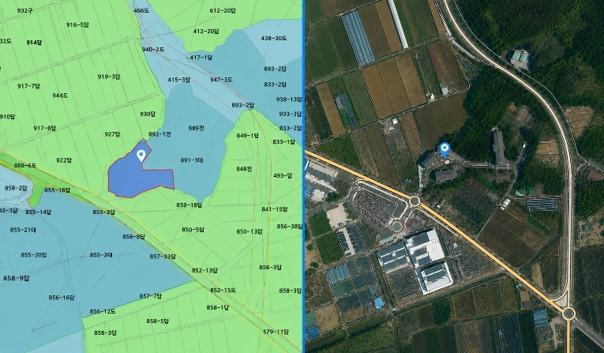
-
•
지장물 보상을 위한 물건조서 작성 대행
- ✓ 원칙적으로 사업시행자가 감정평가법인 등을 선정하여 지장물 조사 등의 업무를 진행하는 것이 일반적이지만, 일부 누락 등 이를 불신하는 토지 소유자가 의뢰하는 경우가 있습니다.
- ✓ 이 경우, 누락된 지장물 없이 철저하게 빠짐없이 작성하여 최초 보상협의 시 한 번에 정당한 보상금 수령이 가능하게 할 수 있다는 장점이 있습니다.
-
•
기타 손실보상 관련 행정심판 업무 등
“당신의 땀과 애환이 서린 그 땅, 시그니처 행정사사무소가 정당한 가치와 보상을 찾아드립니다!”
지금 바로 상담 신청하세요!
노동·산재보상
산업재해(산재) 보상의 개요
산재보상이란, 근로자의 업무상 재해를 신속·공정하게 보상하고, 재해근로자의 치료, 재활 및 사회복귀를 촉진하는 것을 목적으로 하는 산업재해보상보험법(산재보험법)에 의거하여 근로자가 업무상의 사유로 인해 부상, 질병, 장해를 입거나 사망한 경우, 국가가 사회보험 제도를 통해 신속하고 공정하게 치료와 보상 등을 하는 제도입니다.
2023년 7월 1일 노무제공자의 전속성 요건의 폐지 이후, 2025년 기준으로 산재보험 적용 근로자의 수는 약 2,275만 명에 달하고 있으며, 이에 따라 산재보상 관련 신청 및 청구 등 산재보상 권익구제 업무의 수요가 매년 증가하고 있는 추세입니다.
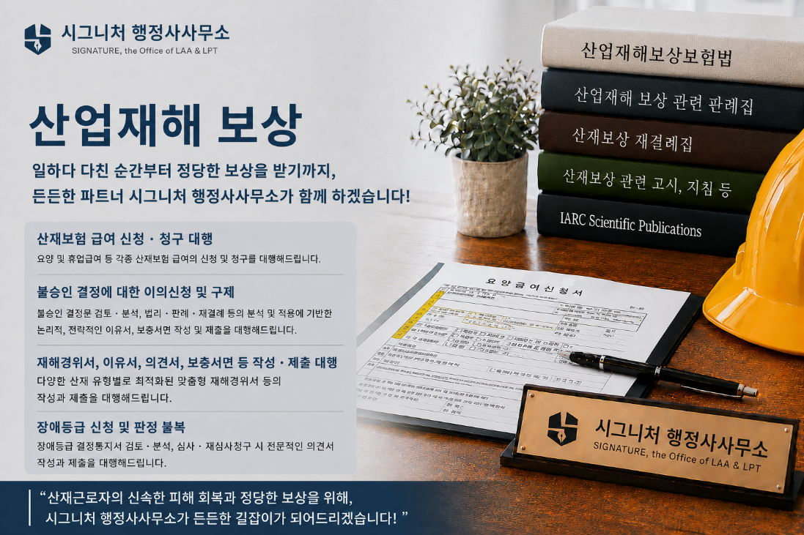
산재(업무상 재해)의 유형
업무상 재해란, 산재보험법 제5조 제1항에 명시된 바와 같이 업무상의 사유로 인하여 발생한 근로자의 부상·질병·장해 또는 사망을 의미하며, 그 유형은 크게 다음의 3가지로 구분됩니다.
- • 업무상 사고: 업무수행 중 관련 법령에서 정한 일정한 원인에 의해 발생한 사고
- • 업무상 질병: 건강상 장애 유발 위험요인을 취급 또는 그 노출, 업무상 부상, 업무상 정신적 스트레스로 인한 질병으로서, 근골격계 질환, 뇌심혈관계 질환, 업무상 정신질환 등
- • 출퇴근 재해: 주거와 취업장소 사이를 출퇴근하는 중에 발생한 사고
업무상 재해의 판단 기준
산재보험법에는 업무상 재해란, 업무수행 중 업무상의 사유에 기인하여 발생한 재해라고 규정하고 있으며, 업무상 재해의 여부를 판단하는데 있어 다음의 2가지 요건을 그 판단 기준으로 하고 있습니다.
- • 업무 수행성: 근로자가 사업주와 근로계약을 체결하고 사업주의 지배·관리 하에서 업무 수행 중에 산재가 발생하였는지의 여부
- • 업무 기인성: 업무와 발생한 업무상 재해 사이에 상당인과관계가 존재하는지의 여부
산재보험 급여의 종류
- • 요양급여: 진료·약제비, 간호·간병비, 입원·재활치료비, 이송비 등 치료와 관련한 보험급여
- • 간병급여: 치유 후 의학적으로 간병이 필요한 경우 지급하는 보험급여
- • 휴업급여: 요양기간 중 일하지 못한 기간에 대한 보험급여
- • 상병보상연금: 2년 이상의 요양기간과 중증요양상태등급인 경우 휴업급여 대신 지급되는 보험급여
- • 직업재활급여: 산재장애인을 원직장에 복귀시켜 고용을 유지하는 사업주에게 지원금으로 지급되거나 실업상태인 산재장애인을 직업훈련 비용과 수당으로 지급되는 보험급여
- • 장해급여: 치유 후 장해가 남은 경우 등급에 따른 보험급여
- • 진폐보상연금: 암석, 금속, 유리섬유 등의 취급으로 인한 업무상 질병인 진폐에 걸린 근로자에게 지급하는 연금
- • 유족급여: 업무상의 사유로 인해 사망한 경우 유족에게 지급하는 보험급여
- • 장례비: 장례를 지낸 유족에게 지급하는 보험급여
업무상 재해 판정 절차
산재보상에서 업무상 재해의 판정 절차는 일반적으로 아래의 2가지 경우로 구분되어 진행됩니다.
• 업무상 사고의 경우:
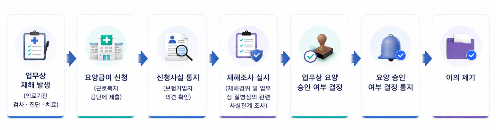
• 업무상 질병의 경우:
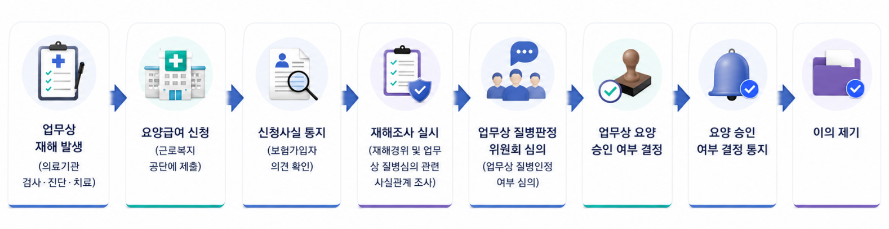
산재 장해 판정 절차
산재로 인해 장해가 남은 경우, 장해급여를 받기 위해 산재 장해판정 절차를 거치게 되는데 일반적으로 아래와 같은 절차를 거치게 됩니다.
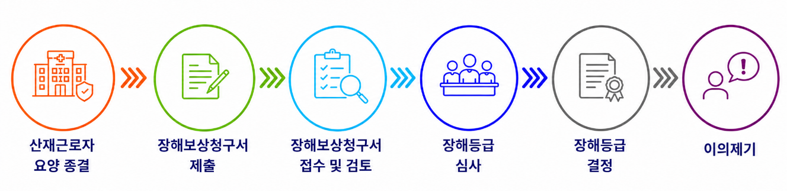
산재보상 관련 컨설팅 서비스
산재보상의 최초 신청 시 뿐만 아니라 불승인에 대한 불복에 있어서, 업무와 발생한 산재 사이의 상당인과관계를 법리적 근거, 객관적 사실과 그 사실에 근거한 의학적 소견 등에 기반하여 얼마나 논리적이면서 설득력 있게 입증하느냐에 따라 그 성패가 좌우됩니다.
특히, 재해경위서, (재)심사청구서, 이유서, 의견서, 보충서면 등의 작성 시에는 다양한 산재 유형별로 업무상 재해임을 인정받을 수 있는 상당인과관계의 입증을 위하여 관련 법령상 근거와 법리의 분석 및 적용, 관련 대법원 판례와 재결례의 분석 및 적용, 공신력이 있는 기관의 객관적이고 역학적인 데이터 등에 기반한 종합적이고 전략적인 접근이 필수적입니다.
“시그니처 행정사사무소는 복잡하고 막막한 산재보상의 처음부터 끝까지, 산재피해 근로자의 든든한 조력자가 되어드리겠습니다!”
시그니처 행정사사무소의 산재보상 관련 컨설팅 서비스는 아래와 같습니다.
-
•
신속승인(간소화) 절차 대행
일정 직종에서 일정 근무기간 이상 특정 신체부위에 부담을 주는 업무(신체부담 업무)를 수행 중 빈번하게 발생하는 근골격계 질병에 대해 업무관련성이 강하다고 평가하여 업무상질병판정 위원회의 심의 등 절차를 간소화함으로써 처리기간을 대폭 단축하여 업무상 산재 여부를 신속히 판단하는 절차
-
•
사례별 최적의 맞춤형 재해경위서 작성 및 제출 대행
✓ 출퇴근 중 사고✓ 업무시간 중 사고✓ 휴게시간 중 사고✓ 행사 중 사고✓ 제3자의 가해행위에 의한 사고 등✓ 업무상 질병 - 근골격계 질환✓ 업무상 질병 - 뇌심혈관계 질환✓ 업무상 질병 - 신경정신계 질환(직장내 괴롭힘, 자해행위(사망) 등)✓ 업무상 질병 - 직업성 암 등 기타 -
•
공단의 결정 등에 대한 불복절차 대행
- - 1단계: 심사 청구(근로복지공단의 산재심사위원회)
- - 2단계: 재심사 청구(고용노동부의 산업재해보상보험재심사위원회)
“산재근로자의 신속한 피해 회복과 정당한 보상을 위해,
시그니처 행정사사무소가 든든한 길잡이가 되어드리겠습니다!”
지금 바로 상담 신청하세요!
생활민원 행정
생활민원 행정이란,
국민이 일상생활 속에서 겪는 크고 작은 각종 행정적 문제와 당사자 사이의 권리·의무 관계에서 발생하는 갈등과 문제 등을 해결하기 위한 행정 컨설팅 서비스를 의미합니다.
아래의 생활민원별 다양한 분야처럼, 각종 억울한 행정처분과 행정문제, 복잡하고 까다로운 행정절차와 생소한 각종 행정 서면과 서류 등의 작성, 행정기관에 민원 신청 접수 및 사후 대응까지,
많은 분들이 어떤 행정 서면과 서류 등을 준비하고, 어떻게 행정절차를 진행해야 하는지, 자신의 행정권익을 주장하고 회복할 수 방법은 무엇인지 등에 대한 어려움을 겪고 있는 경우가 있습니다.
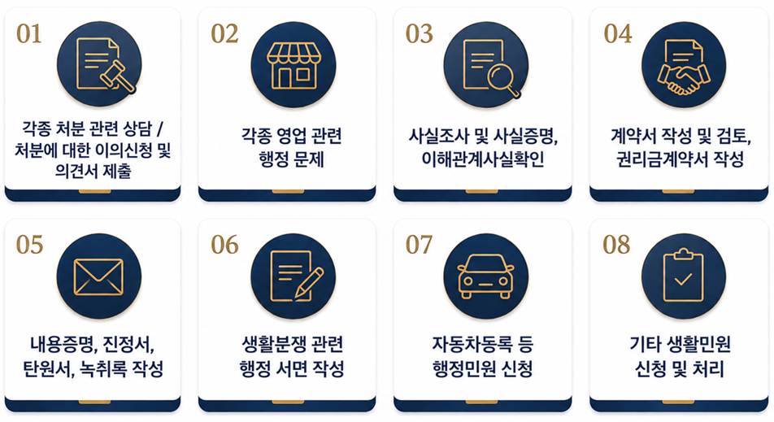
시그니처 행정사사무소는 일상생활과 밀접한 생활민원 행정업무와 관련하여 아래와 같은 생활민원 관련 업무처리 프로세스를 거쳐 의뢰인이 처한 개별 상황을 면밀히 검토하여 의뢰인의 행정편익을 증진하고 행정권익을 보호하기 위한 전문적인 생활민원 행정 컨설팅 서비스를 제공합니다.
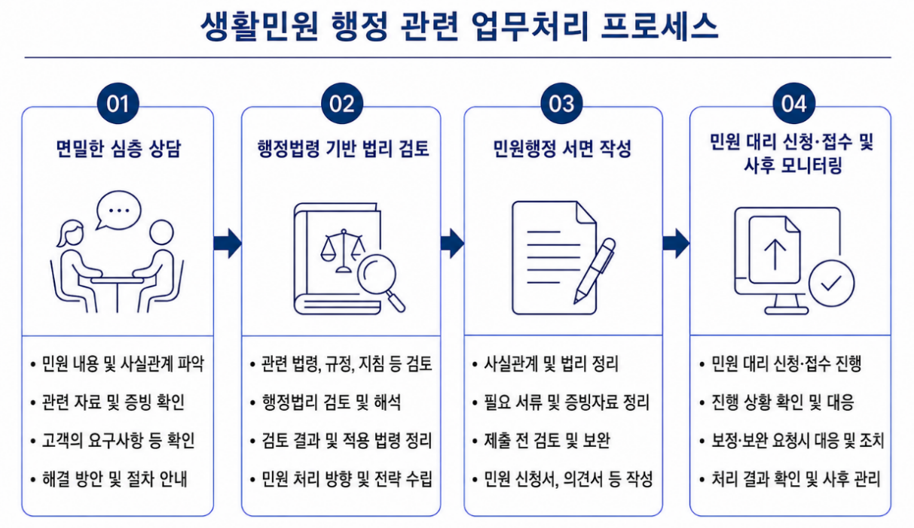
“의뢰인의 일상생활 속 행정권익을 지키는 든든한 행정 파트너, 시그니처 행정사사무소가 함께 하겠습니다!”
지금 바로 상담 신청하세요!
시그니처 행정사사무소에서는 「국가공인 외국어번역행정사 자격」과 「IP(특허) 번역사 자격」을 보유하고 「해외 근무경험」을 갖춘 행정사가 번역문의 접수국가와 기관 등의 요구사항에 부합하도록 「아포스티유」, 「영사확인」, 「번역확인증명」, 「번역공증 대행」, 「기업관련 번역」, 「IP(특허) 번역」, 「제반 증명서 번역」및 기타 다양한 분야에 대한 공인번역 서비스를 제공합니다.
화면의 좌측 하위 메뉴에서 각 분야별 세부 업무를 클릭하시면 관련 정보를 확인하실 수 있습니다.
아포스티유(Apostille)
아포스티유(Apostille)란,
전 세계의 지구촌화로 인한 세계화와 국제화의 패러다임에 따라 한 국가에서 발행한 문서가 다른 국가에서 사용되는 사례가 날로 증가하고 있는 업무환경에서, 한 국가의 문서가 다른 국가에서 그 효력을 인정받기 위해서는 문서의 국외 사용을 위한 확인이 필요합니다.
문서의 국외 사용을 위한 확인을 받기 위해, 원래는 영사확인의 절차를 거쳐야 했습니다.
그러나 1965년 1월 「외국 공문서에 대한 인증의 요구를 폐지하는 협약(이하, 아포스티유 협약)」이 발효되면서, 이에 따라 아포스티유 협약 가입국 간에는 영사확인의 절차를 거치지 않고, 문서발행 국가의 권한 있는 당국이 자국 문서의 진위여부를 확인해주는 아포스티유 인증만으로 그 문서의 공적 효력을 인정받을 수 있게 되었습니다.
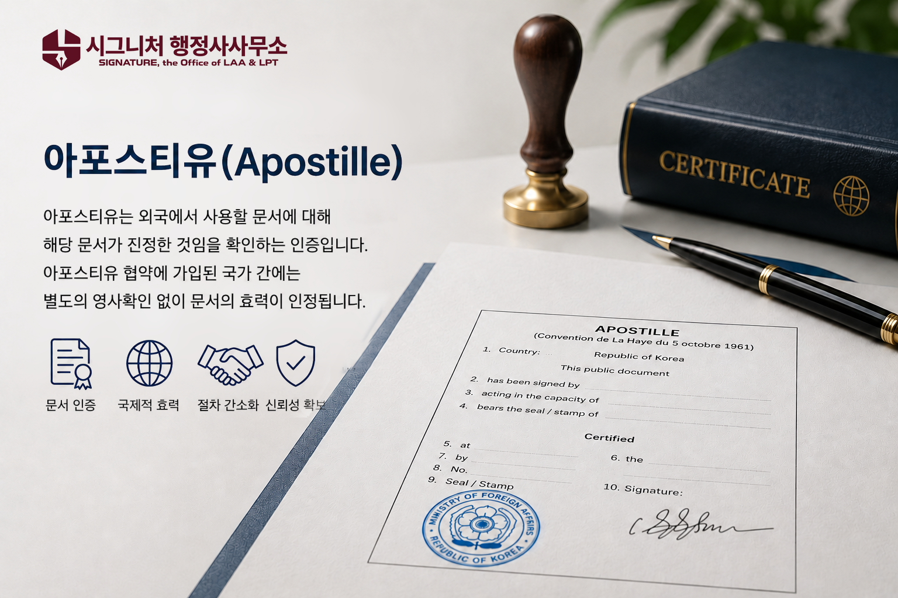
“아포스티유, 신속하고 정확한 처리를 원하신다면, 시그니처 행정사사무소와 함께 진행하세요!”
지금 바로 상담 신청하세요!
영사확인
영사확인이란,
어느 한 국가가 발행한 문서를 다른 국가에서 사용하기 위하여 그 문서의 효력을 인정받기 위한 절차 중의 하나로, 아포스티유 협약에 가입하지 않은 국가에 제출하는 문서를 대상으로 하며, 이 경우 우리나라 재외동포청의 영사확인을 거쳐 문서가 사용될 국가의 주한 해외공관에서 영사확인라는 절차를 통해 문서의 공적 효력을 인정받는 것을 말합니다.
2026년 현재 아포스티유 협약 미가입국은 여전히 다수 존재하고 이들 미가입국에 문서를 제출할 경우에는 영사확인의 절차가 필요하며, 대표적인 미가입 국가로는 베트남, 태국, 말레이시아, 대만, UAE 등이 있습니다.
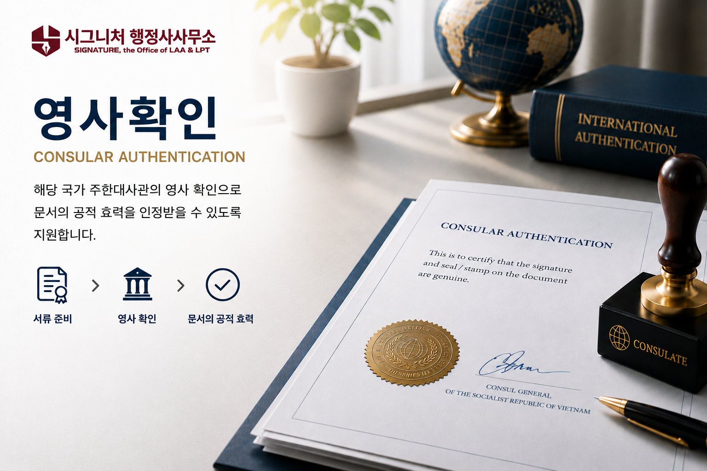
“영사확인, 신속하고 정확한 처리를 원하신다면, 시그니처 행정사사무소와 함께 진행하세요!”
지금 바로 상담 신청하세요!
번역확인증명
번역확인증명이란,
행정사법 제20조 제2항에 근거하여, 「국가공인 외국어번역행정사」가 직접 번역한 번역문에 대하여 그 번역문이 원문에 충실하게 번역되어 상위 없음과 번역문의 정확성·신뢰성을 공식적으로 확인·증명하는 것을 말합니다.
「국가공인 외국어번역행정사」만이 행정사법의 상기 관련 조항에 의거하여 「번역확인증명서(Certificate of Translation)」를 발급할 수 있으며, 출입국·비자, 유학, 해외취업, 국제결혼, 국내·외 법인설립 등 다양한 국제적인 행정업무와 연관하여 빈번하게 사용됩니다.
특히, 번역확인증명서는 별도의 번역공증 절차 없이 발급받아 제출 가능한 경우가 많으므로 번역공증에 소요되는 시간과 비용을 대폭 절감할 수 있는 장점이 있습니다. 다만, 일부 국가나 기관의 접수처에서 번역공증을 요구할 수도 있는데, 이 경우 사전에 접수처 요구사항을 확인하는 것이 중요합니다.
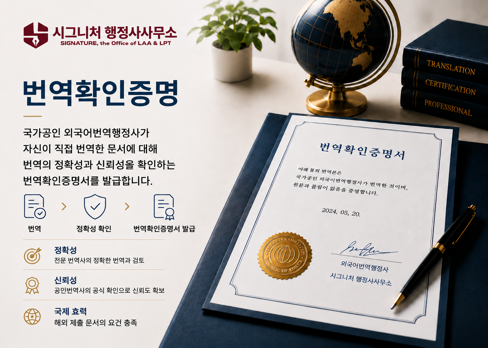
“상담, 의뢰부터 고품질의 번역과 번역확인증명서까지, 시그니처 행정사사무소에서 원스톱 서비스로 진행하세요! ”
지금 바로 상담 신청하세요!
번역공증 대행
번역공증 대행이란,
법무부의 「번역문 인증사무 지침」에 규정된 자격을 갖춘 번역인이 원문 문서를 번역한 뒤, 그 번역문이 원문에 따라 제대로 번역되었음을 공증자격이 있는 공증사무소의 공증인으로부터 확인·인증을 받는 절차로 법적, 공식적으로 인정받을 수 있는 문서가 되도록 보증받는 절차를 의뢰인을 대신하여 외국어번역행정사가 대행하는 것을 말합니다.
시그니처 행정사사무소에 번역을 의뢰하신 후 「번역확인증명서」 대신, 꼭 번역공증이 필요한 경우 외국어번역행정사가 법무부에 공식 등록된 공증사무소를 방문하여 확실하고 안전하게 번역공증 업무를 대행해드립니다.
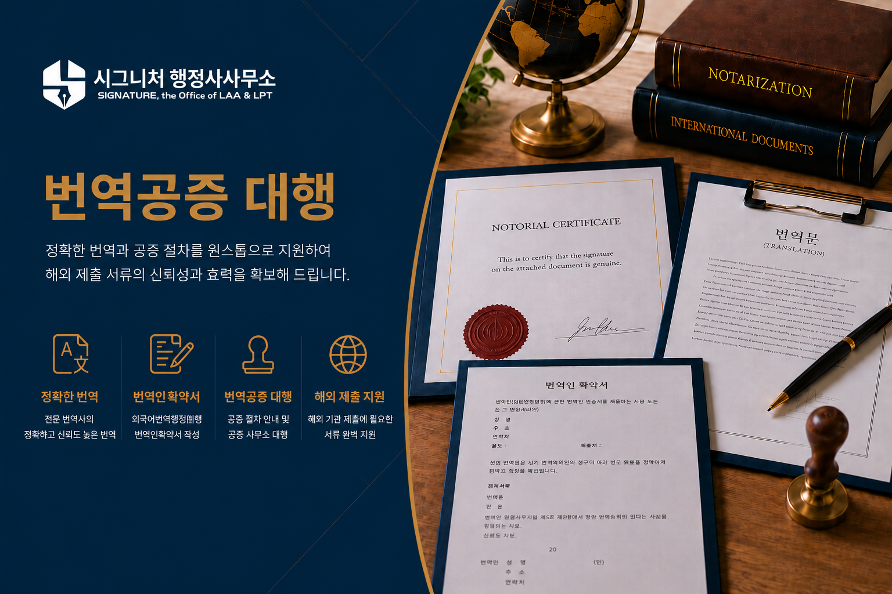
“번역공증, 신속하고 정확한 처리를 원하신다면, 시그니처 행정사사무소와 함께 진행하세요!”
지금 바로 상담 신청하세요!
기업 번역
기업 번역이란,
기업의 제반 경영활동과 비즈니스 목적을 달성하기 위해 그와 관련된 제반 문서와 서류 등을 전문적으로 번역하는 분야이며, 시그니처 행정사사무소에서는 「국가공인 외국어번역행정사 자격」과 「IP(특허) 번역사 자격」을 보유하고 「해외 근무경험」을 갖춘 전담 행정사가 전문적으로 기업 번역 관련 공인번역 컨설팅 서비스를 제공합니다.
단순한 언어의 번역이 아니라, 해당 기업의 가치와 다양한 측면의 기업 특성 등을 정확히 전달하여 급변하는 글로벌 시장에서 생존하고 성공하기 위해 필수적으로 필요한 국제적인 비즈니스 커뮤니케이션의 한 수단이라고 할 수 있습니다.
기업 번역의 대표적인 세부 분야로는 「재무회계·법률·IR 번역」, 「기술번역」, 「홈페이지· 홍보·마케팅 번역」, 「해외 법인진출 번역」, 「투자유치 번역」 등이 있습니다.
또한, 기업 번역은 각종 영업비밀, 미공개 기술정보 및 신제품 정보 등 보안등급이 높은 기업의 기밀정보를 취급하기 때문에 번역 프로세스 전반에 걸쳐 철저하고 강력한 보안유지가 필수적입니다.
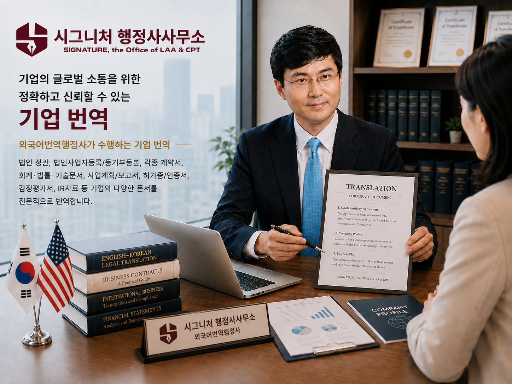
저희 시그니처 행정사사무소는 국가가 공인한 자격을 갖춘 신뢰할 수 있는 전문 공인번역 컨설팅 사무소로서 기업 고객의 중요한 기밀정보를 안전하고 철저하게 관리·처리하고 있습니다.
“국제 비즈니스의 성공, 공인번역 컨설팅 전문 시그니처 행정사사무소에서 시작하세요!”
지금 바로 상담 신청하세요!
《기업 번역 분야별 세부 업무》
-
일반경영 관련:
정관 / 사내 규정·규칙 / 법인사업자등록 / 법인등기사항증명서 / 등기사항증명서(토지·건물) / 법인인감증명 / 주주·임원·사원 명부 / 이사회·주주총회 의사록 등
-
재무·회계 관련:
재무상태표 / (연결, 비교, 포괄) 손익계산서 / 자본변동표 / 현금흐름표 / 회계감사보고서 등
-
계약서 등 관련:
일반계약 / 매매계약 / 임대차계약 / 대리점계약 / 국제운송계약 / 기술실시계약 / 비밀유지계약 / 산학협력연구계약 / OEM, ODM 계약 / 건설계약 / 국제조달계약 / 자문계약 / 고용계약 / 양해각서 / 확약서 / 의향서 등
-
IR / 홍보·마케팅 관련:
지속가능경영·ESG 보고서 / 법인소개·안내서 / 사업계획서 / 투자설명·제안서 / 기간별 실적보고서 / 연차보고서 / 시장조사보고서 / 증권신고서 / 실적보도자료 / 홈페이지 / 카탈로그·브로슈어 / 제품 매뉴얼 등
-
무역 관련:
수출·수입신고필증 / 판매·거래 제안서 / 송장 / 신용장 / 선하증권 / 동·식물검역증명서 / 식품·수산물위생증명서 등
IP(특허) 번역
IP(특허) 번역이란,
국제특허 출원을 위한 특허명세서, 출원 구비서류, 기술문서, 특허심사 대응 문서(OA 통지서, OA 의견서 등) 등에 관한 번역분야로서,
단순히 특허발명 특유의 번역언어 지식뿐만 아니라 특허 관련 기술 지식, 「특허법(35 U.S.C., 37 C.F.R. 등)」, 「PCT(특허협력조약)」 등의 특허 관련 법률지식과 USPTO(미국 특허청)의 「MPEP(미국 특허심사 절차 매뉴얼) 요구사항」 등에 대한 복합적인 이해와 적용이 요구되는 특수번역 분야라고 할 수 있습니다.
지식재산권[IP(특허)]에 대한 이해뿐만 아니라 특허 관련 전문 번역언어, 특허 기술 분야, 특허 법률 등 관련 전문지식을 바탕으로 한 고품질의 IP(특허) 번역을 통하여 특허 발명가 및 출원인의 특허권익을 보호하고, 국제특허 출원을 통한 특허발명의 국제화와 특허가치의 증진을 실현할 수 있습니다.
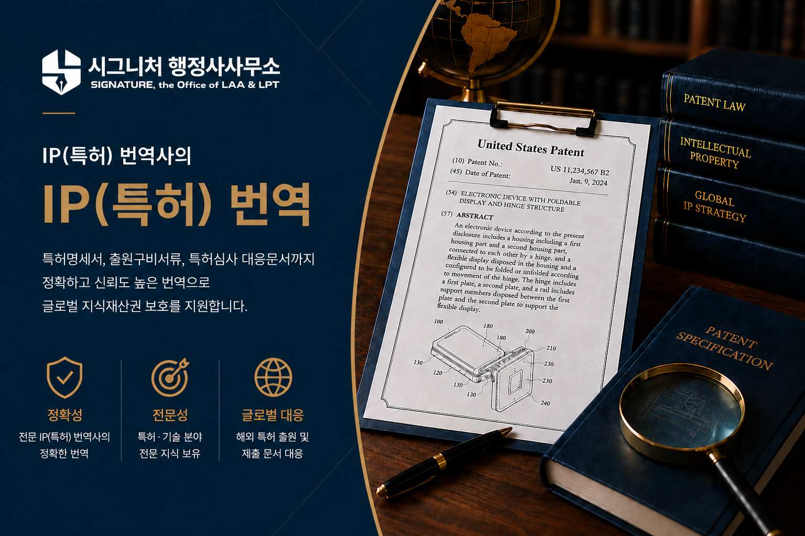
시그니처 행정사사무소는 지식재산처(구 특허청)의 공신된 협력·협의 단체인 KAIPS(한국지식재산 서비스협회)가 인증한 「IP(특허) 번역사」 자격을 보유하고 있습니다.
“세계로 뻗어가는 당신의 특허, 시그니처 행정사사무소에서 날개를 달아드립니다!”
지금 바로 상담 신청하세요!
제 증명서 번역
제(諸) 증명서 번역이란,
개인이나 기업이 중앙 및 지방 행정기관, 공·사부문 기관, 각급 교육기관, 단체 등으로부터 발급받은 공식 문서로서의 제 증명서를 외국의 문서 접수처에 제출하기 위해 증명서 접수 국가의 외국어로 번역하는 작업을 의미합니다.
단순히 언어를 번역하는 것이 아니라, 제 증명서 발행 국가의 관련 행정법률 언어와 그 증명서를 접수하는 해외 국가의 법적·행정적 언어문화 및 그 언어·문화적 특성에 대한 정확한 이해가 요구될 뿐만 아니라, 제 증명서 원문의 내용이외국에서도 동일하게 유지될 수 있도록 법률적·행정적 번역용어를 엄선하여 번역해야 하는 분야입니다.
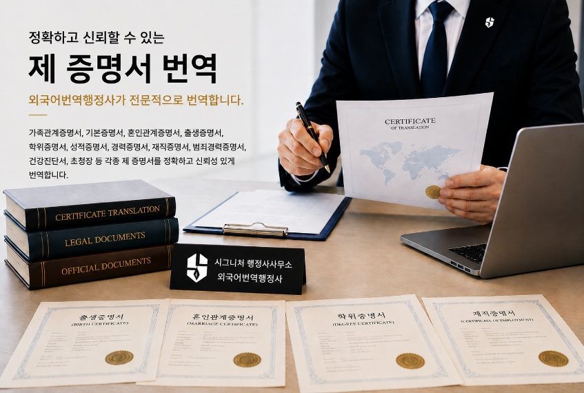
제 증명서에는 대표적으로 「기본증명서」, 「가족관계증명서」, 「혼인관계증명서」를 포함하여 「출생·혼인·사망증명서」, 「주민등록등·초본」, 「제적등·초본」, 「재학증명서」, 「성적증명서」, 「졸업증명서」, 「학위증명서」, 「합격증명서」, 「학교생활기록부」, 「경력증명서」, 「퇴직증명서」, 「수료·이수증」, 「의료진단서」, 「세무관련 증명서」, 「은행잔고증명서」 등 다양한 종류가 있습니다.
“제 증명서 번역, 정확하고 신뢰할 수 있는 공인번역 전문 서비스를 원하신다면, 시그니처 행정사사무소에서 진행하세요!”
지금 바로 상담 신청하세요!
기타 전문 번역
시그니처 행정사사무소에서는 「국가공인 외국어번역행정사 자격」, 「IP(특허) 번역사 자격」과 「ISO 13485 심사원 자격」을 보유하고, 「해외 근무경험」과 「의료기기 업계 실무경험」을 갖춘 전담 행정사, 컨설턴트가 아래와 같은 다양한 기타 전문 번역 분야별 공인번역 컨설팅 서비스를 제공합니다.
“정확하고 신뢰성 있는 공인번역 서비스가 필요하시다면, 시그니처 행정사사무소에서 진행하세요!”
지금 바로 상담 신청하세요!
《기타 전문 번역 분야별 세부 업무》
-
바이오·의료기기 관련:
ISO 13485·GMP 관련 문서 / 의료기기 QMS 관련 문서, 기술문서·DMR·DHF 등 관련 제반 문서 / 시험검사·성능시험 데이터, IFU 등 / 의료기기 제조·수입 인허가 서류 등 / FDA·CE-IVDR 인허가 관련 제출 제반 문서·부속 서류 및 첨부자료 등
-
학술·공학·기술·법률 관련:
학위 논문 및 초록 / 국제저널 기고논문 / 강의계획서 / 연구계획서 / 학사 가이드북·요강 / 매뉴얼 / 설명서 / IT 기술 / 법률·법무 / IP(특허) 등
-
학적·유학 관련:
졸업증명서·학위증명서 / 졸업예정증명서 / 성적증명서 / 추천서 / 자기소개서 / 학업계획서 / 생활기록부 등 각종 학적서류 / 예방접종증명서·예방접종기록 등
-
세무 관련:
납세증명서 / 납세사실증명 / 국세·지방세완납증명서 / 소득금액증명원·기타 소득관련 증명서 / 근로소득원천징수영수증 / 사업소득원천징수영수증 / 부가가치세 과세표준증명원 / 소득확인증명서 등
-
부동산·동산 등 재산 관련:
부동산 임대차·매매 계약서 / 부동산 등기사항증명서 / 토지·건축물대장 / 등기권리증(등기필증) / 자동차등록증 / 자동차등록원부 등·초본 / 자동차등록말소사실증명서 등
-
군·병무 관련:
병적증명서 / 병적기록표 / 복무확인서 / 군입영사실확인서 / 전역증명서·전역예정증명서 / 군경력증명서 / 각 군별 학사관련 서류 등
-
금융·보험 관련:
예금·대출 잔액증명서 / 외화예금 잔액증명서 / 보험가입증명서 / 보험료납입증명서 / 보증보험증권 / 증권거래내역증명서 / 투자계좌 잔고증명서 / 펀드가입증명서 등
시그니처 행정사사무소에서는 「국가공인 의료기기 RA전문가 자격」과 「의료기기 업계 실무경험」을 갖춘 행정사, 컨설턴트가 (1) 의료기기 인허가 (업허가, 품목허가 등, 변경허가 등, 품목갱신, 인허가 문서작성 대행), (2) 품질경영시스템 (GMP/ISO 13485 인증 컨설팅, QM 및 품질문서 등 작성 대행), (3) 해외 인허가 (FDA인허가, CE인증, 동남아 인허가)의 3개 주요분야에 대한 컨설팅 서비스를 제공합니다.
화면의 좌측 하위 메뉴에서 각 분야별 세부 업무를 클릭하시면 관련 정보를 확인하실 수 있습니다.
의료기기 인허가
의료기기 인허가는 업허가 준비 단계부터 제조 허가·인증·신고, 변경 허가·인증·신고, 품목갱신까지 이어지는 핵심절차를 체계적으로 대응하는 업무입니다.
시그니처 행정사사무소에서는 「국가공인 의료기기 RA 전문가 자격」과 「의료기기 업계 실무경험」을 갖춘 행정사, 컨설턴트가 제품의 특성과 등급, 제조·수입업 형태 등을 사전 검토와 분석을 통하여 관련 규제 요구사항을 충족하기 위해 필요한 인허가 전략 수립과 인허가 심사에서 요구되는 제출 서면과 문서 및 첨부 자료 등을 면밀히 구성·작성하여 실제 인허가 절차의 진행이 매끄럽게 수행될 수 있도록 지원합니다.
화면의 좌측 하위 메뉴에서 각 분야별 세부 업무를 클릭하시면 관련 정보를 확인하실 수 있습니다.
제조·수입업 허가
의료기기 제조·수입업 허가란,
의료기기 제조·수입업 허가는 기업이 의료기기를 생산하거나 해외에서 들여와 국내에 공급하기 위해 반드시 거쳐야 하는 법적 절차입니다.
제조·수입업 허가를 통해 기업은 국내 의료기기 시장에 공식적으로 진입할 수 있으며, 제품의 안전성과 품질을 국가로부터 인정받게 됩니다.
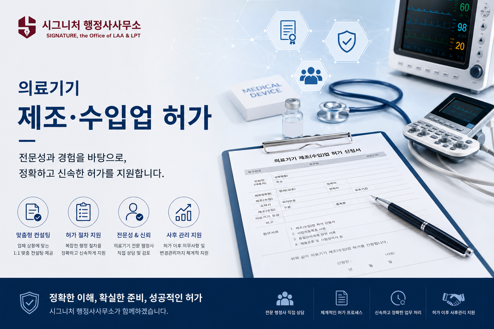
제조·수입업 허가 신청 및 절차
식품의약품안전처 의료기기통합정보시스템의 의료기기전자민원을 통해
제조수입업 허가 신청서를 접수하거나, 관할 지방식품의약품안전청 민원실을
방문하여 접수할 수 있으며, 일반적으로 다음과 같은 절차를 거치게 됩니다.
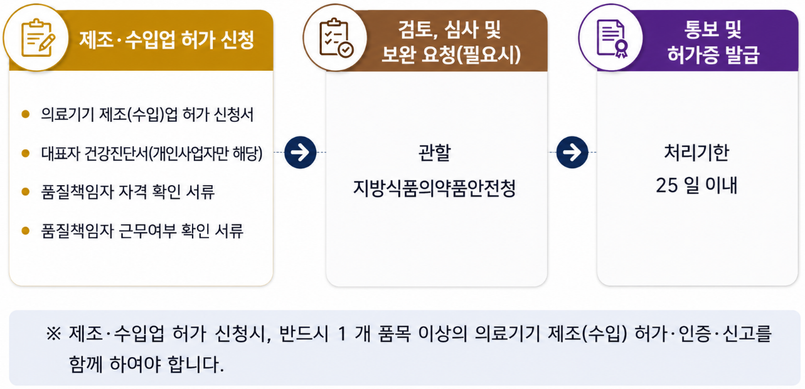
“의료기기 시장 진출의 첫 관문, 의료기기 제조·수입업 허가!”
“시그니처 행정사사무소에 맡기시고, 제품 연구와 개발에만 집중하세요!”
지금 바로 상담 신청하세요!!!
《참고 - 의료기기/체외진단의료기기의 정의와 등급 분류》
의료기기의 정의
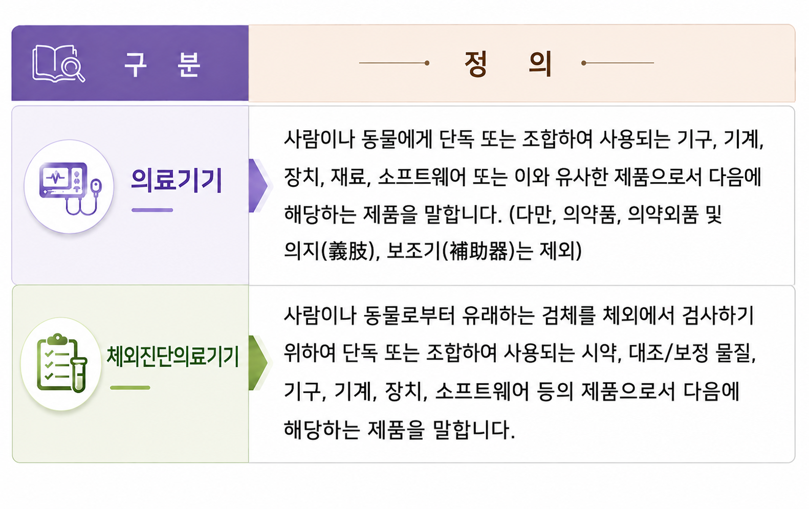
의료기기의 등급 분류기준 및 등급 체계
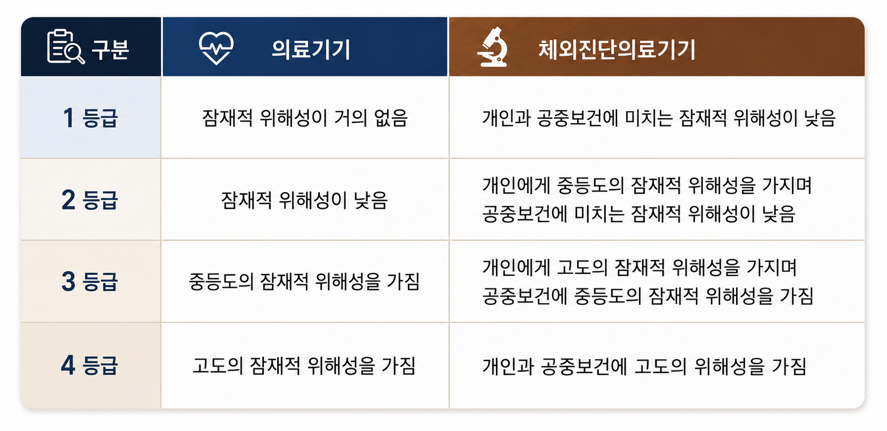
품목허가·인증·신고
품목 허가·인증·신고란,
「의료기기법」 제6조의 제2항 및 같은 법 시행규칙 제5조의 제1항, 「의료기기 허가·심사·신고 등에 관한 규정」에 의거하여 의료기기의 등급에 따라 허가·인증·신고의 체계가 운영되고 있으며, 1등급과 2등급은 한국의료기기안전정보원에서, 3등급과 4등급은 식품의약품안전처에서 담당하고, 신청사항 및 제출 자료를 심사하여 안전성과 성능이 적합한 경우 의료기기를 허가하는 제도를 말합니다.
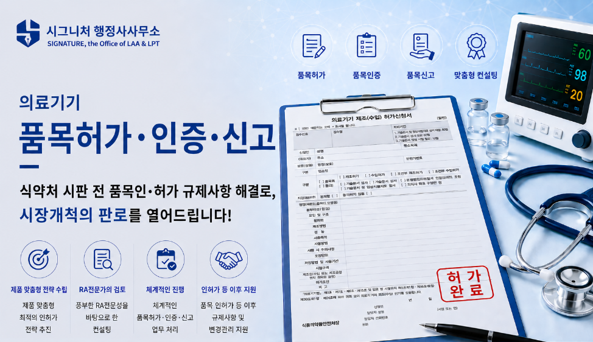
《의료기기 등급별 품목 허가·인증·신고 절차 흐름도》
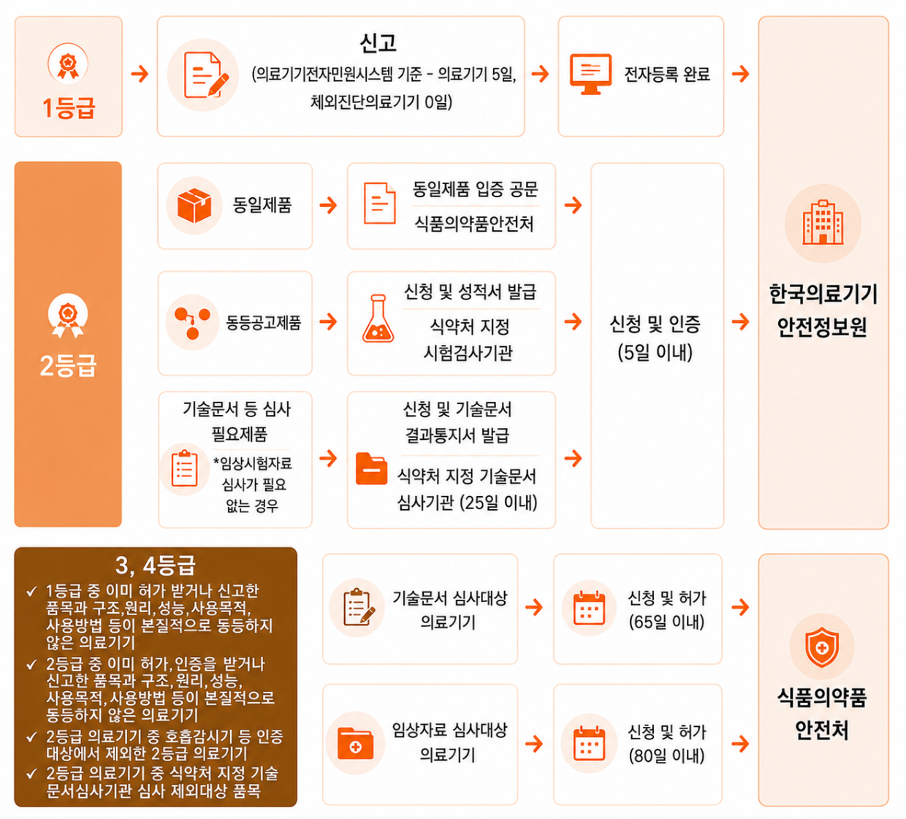
“복잡하고 까다로운 식약처 시판 전 인허가 규제사항 해결로,
시그니처 행정사사무소가 의료기기 시장개척의 판로를 열어드립니다!”
지금 바로 상담 신청하세요!
변경허가·인증·신고
변경 허가·인증·신고란,
의료기기 제조·수입업체가 이미 허가 또는 인증을 받거나 신고한 의료기기의 기존 허가·인증·신고된 사항 중 일부를 변경하려는 경우, 의료기기 관련 행정법령과 행정규칙 등에 규정된 변경 방법과 절차에 따라 변경사항을 반영하는 제도입니다.
이미 허가·인증을 받거나 신고를 완료한 의료기기의 기재 사항(모양 및 구조, 원재료, 제조방법, 성능, 사용목적 및 사용방법 등) 등에 변경이 생겼을 때, 그 변경사항의 안전성과 유효성을 주무 행정기관으로부터 다시 검증받는 제도라고 할 수 있습니다.
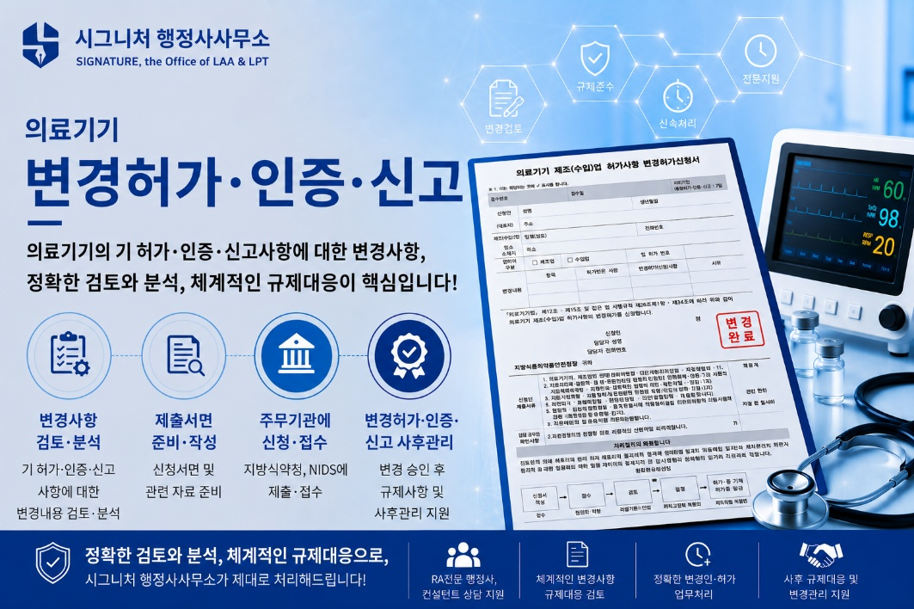
변경 허가·인증·신고 관련 법령
변경 허가·인증·신고 제도는 아래와 같은 관련 법령에 기초하고 있습니다.
- • 의료기기법 제12조(변경허가 등)
- • 의료기기법 시행규칙 제26조(허가사항의 변경허가 신청 등)
- • 의료기기 허가·신고·심사 등에 관한 규정(식약처 고시) 제19조(의료기기의 허가·인증·신고의 변경 처리)
- • 의료기기 허가·신고·심사 등에 관한 규정(식약처 고시) 제19조의2(의료기기 소프트웨어 허가·인증·신고의 변경 처리)
- • 의료기기 허가·신고·심사 등에 관한 규정(식약처 고시) 제19조의3(변경 허가·인증 전 제품의 제조·수입) 등
변경 허가·인증·신고별 변경 사유 및 제출 서류
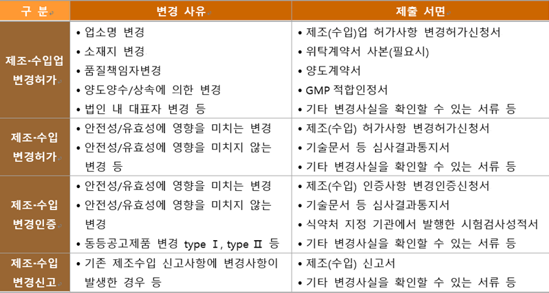
“의료기기 변경 허가·인증·신고, 정확한 검토와 분석, 체계적인 규제대응으로,
시그니처 행정사사무소가 제대로 처리해드립니다!”
지금 바로 상담 신청하세요!!!
품목갱신
품목갱신 제도란,
「의료기기법」의 개정(2020년 10월 8일 시행)에 따라 국내에서 허가·인증·신고된 의료기기에 대해 유효기간을 부여하고, 해당 기간 동안의 (1) 안전성 및 유효성 유지 여부, (2) 안전성 정보 및 조치에 관한 자료 등을 검토하여 유통되고 있는 의료기기 제품을 정비하고, 실효성 있는 의료기기의 안전 관리를 도모하기 위한 제도입니다.
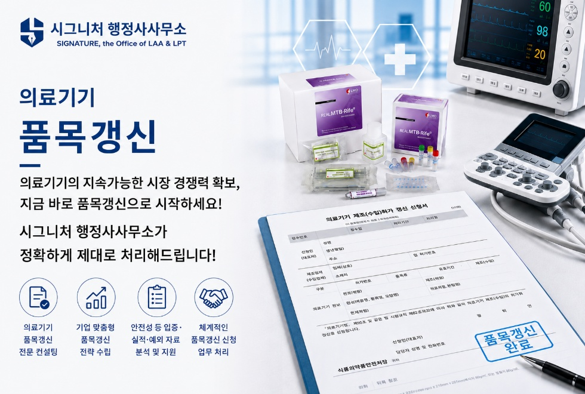
품목갱신 절차
-
•
품목갱신은 일반적으로 다음과 같은 절차를 거치게 됩니다.
신청서 작성 → 접수 → 제출자료 검토 → 보완요청(필요시) → 보완제출 → 품목갱신 완료 - • 품목갱신 절차에 대한 구체적인 내용은 아래의 도식화된 절차도를 참조하시기 바랍니다.
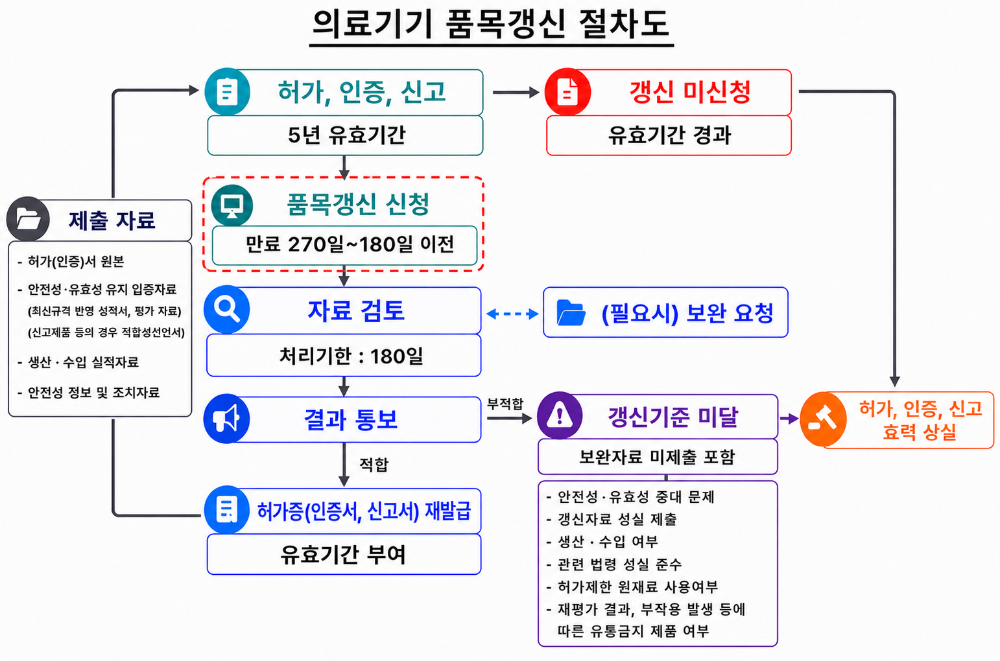
품목갱신 신청 기한, 접수처 및 신청 방법
- • 신청 기한 - 허가·인증·신고의 품목갱신을 신청하기 위해서는 해당 허가·인증·신고의 유효기간의 만료일 270일부터 180일 전까지 갱신을 신청해야 합니다.
- ✓ 허가(1, 2, 3, 4등급)의 갱신: 식품의약품안전처에 신청
- ✓ 인증(2등급) 및 신고(1등급)의 갱신: 한국의료기기안전정보원에 신청
★★★ 중요 체크포인트 ★★★
신청기한 ( 유효기간의 만료일 270일부터 180일 전까지 )이 경과하면, 품목갱신 신청이 불가하므로, 반드시 신청기한 내에 신청해야 합니다!!!
- • 신청 방법 - 품목갱신 신청은 의료기기전자민원시스템에서 갱신 신청서 또는 갱신 신고서를 작성하고 필요한 제반 제출 서면과 문서 및 부속 자료 등을 첨부하여 제출합니다.
“의료기기 「품목갱신」처리는 시그니처 행정사사무소에 맡기시고,
기업의 대표님은 제품의 연구와 개발에만 집중하세요!”
지금 바로 상담 신청하세요!!!
인허가 문서작성 대행
인허가 문서작성 지원 및 대행이란,
의료기기 인허가 문서작성 지원 및 대행은 제조·수입업체가 의료기기 인허가 과정에서 식품의약품안전처와 유관기관에 제출해야 하는 인허가 관련 각종 서면, 문서, 기술문서 심사용 제출서류 및 첨부자료, 보완대응 서면과 제출자료 등을 「국가공인 의료기기 RA 전문가 자격」과 「의료기기 업계 실무경험」을 갖춘 행정사, 컨설턴트가 대신 처리하는 의료기기 인허가 전문 컨설팅 서비스입니다.
대표적인 『인허가 문서작성 지원 및 대행 컨설팅 서비스 분야』로는 「제조·수입업 허가」, 「제조·수입 허가·인증·신고」, 「제조·수입 변경허가·인증·신고」, 「제조허가 등 갱신」, 「GMP 적합성 인증 / ISO 13485 품질문서」 관련 분야 등을 포함하여 매우 다양합니다.
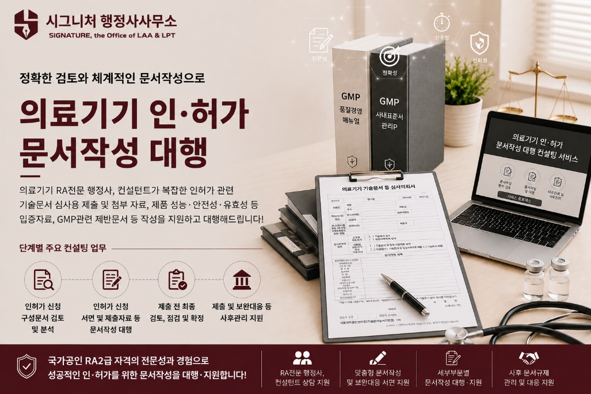
이 과정에서 복잡하고 까다로운 제반 의료기기 관련 행정법령과 행정규칙, 여러 기준규격과 가이드라인, 각종 규정과 지침서, 주무 행정기관 및 유관기관의 심사기준 등에 모두 부합하도록 인허가 관련 서면, 문서, 기술문서 심사용 제출서류와 첨부자료 등을 준비해야 합니다.
이 경우, 시간과 노력을 대폭 줄이면서 여러 준비 서면과 문서, 각종 제출서류 및 첨부자료의 오작성과 착오 누락을 방지하고, 결과적으로 인허가의 신속한 승인 가능성을 높이기 위해서는 『국가공인 RA(규제과학) 전문가 자격』과 『의료기기 업계 실무경험』을 갖춘 전문 행정사, 컨설턴트의 도움을 받는 것이 가장 안전하고 효과적인 선택이 될 것입니다.
시그니처 행정사사무소에서는 「제조·수입업 허가」, 「품목허가·인증·신고」, 「변경허가·인증·신고」, 「품목갱신」, 「기술문서 작성(심사용 제출 서류, 제반 부속 및 첨부 자료 등)」, 「GMP / ISO 13485 품질경영시스템(QMS) 구성 문서(품질매뉴얼, 절차서 등) 작성 대행」과 『의뢰인 맞춤형의 기타 의료기기 인허가 관련 문서작성 대행』 컨설팅 서비스를 제공합니다.
“제조·수입업 허가, 품목허가부터 변경허가, 품목갱신까지,
기술문서부터 GMP/ISO13485 제반 품질문서까지,
의료기기 인허가 문서작성 지원 및 대행 전문 컨설팅 서비스는 시그니처 행정사사무소입니다!”
지금 바로 상담 신청하세요!
품질경영시스템
품질경영시스템은 의료기기 제조 및 품질관리 기준의 준수, GMP/ISO 13485 인증 대응과 각종 품질문서 등의 관리 및 정비에 이르기까지 의료기기의 제조·생산에 관련된 의료기기 품질경영 전반이 실제 안정적으로 기능할 수 있도록 설계한 시스템이라 할 수 있습니다.
시그니처 행정사사무소에서는 「국가공인 의료기기 RA전문가 자격」과 「의료기기 업계 실무경험」을 갖춘 행정사, 컨설턴트가 기업의 운영 현황, 심사 대응을 위한 필요사항과 기준규격 요구사항 등을 면밀히 검토하고 분석한 후, 실제 의료기기 제조현장과 관련 품질문서가 함께 맞물려 운영될 수 있도록 품질경영시스템을 체계적으로 구조화할 수 있도록 전문 컨설팅 서비스를 제공합니다.
화면의 좌측 하위 메뉴에서 각 분야별 세부 업무를 클릭하시면 관련 정보를 확인하실 수 있습니다.
GMP/ISO 13485 인증 컨설팅
시그니처 행정사사무소의 GMP / ISO 13485 인증 컨설팅
시그니처 행정사사무소에서는 「국가공인 의료기기 RA전문가 자격」과 「의료기기 업계 실무경험」을 갖춘 행정사, 컨설턴트가 의료기기 및 체외진단의료기기 제조업체가 안전하고 유효하며 의도된 용도에 적합한 품질의 의료기기를 일관성 있게 생산하고, 국내 GMP 기준과 ISO 13485 국제 표준규격의 요구사항을 충족하는 기업 맞춤형 의료기기 품질경영시스템을 구축하고 운영할 수 있도록 지원합니다.
기업의 제품 특성, 제조 공정, 조직 구조 및 기존 품질문서 체계 등을 면밀히 검토하여 품질매뉴얼, 각 분야별 절차서, 지침서, 기록양식 등 최적의 품질문서 체계를 구축하고 현장에서의 기록과 실제 운영시스템이 상호 연동되는 실질적인 품질경영시스템 체계가 구축·운영될 수 있도록 컨설팅 서비스를 제공합니다.
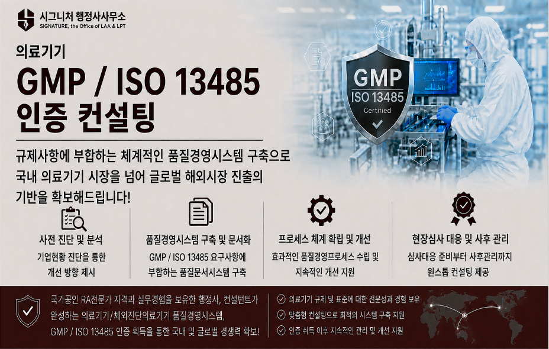
GMP / ISO 13485 인증 컨설팅, 이런 기업이 필요합니다!
- • 의료기기 제조업 허가 및 GMP 최초인증 준비가 필요한 기업
- • 체외진단의료기기 품질문서 체계를 처음 구축하는 기업
- • 기존 품질문서 체계가 실제 업무 및 기록과 연동되지 않아 조치가 필요한 기업
- • GMP 정기심사 또는 변경심사를 앞두고 제반 품질문서의 점검이 필요한 기업
- • ISO 13485 최초인증 후 사후심사를 준비하는 기업
- • 고객불만, CAPA, 변경관리, 내부심사 운영 체계 등을 개선하고자 하는 기업
GMP / ISO 13485 인증 컨설팅 서비스
시그니처 행정사사무소에서 제공하는 컨설팅 서비스 항목은 아래와 같습니다.
- • 품질경영시스템 현황 진단
- • GMP(인체용·동물용) / ISO 13485 품질경영시스템 구축
- • 품질매뉴얼, 절차서, 지침서, 기록양식 작성 지원 및 대행
- • 국내 및 국외(필요시, 유럽·북미 등) 규제 요구사항 검토 및 QMS 체계 수립
- • 변경관리 절차 수립
- • 방침관리 및 경영검토 절차 수립
- • 인적자원 관리 체계 수립
- • 제조환경 및 제조장비 관리 체계 정비
- • 구매 및 공급업체 관리 체계 구축
- • 설계·개발 관리 및 위험관리 체계 구축
- • 부적합품 관리 및 시정·예방조치 체계 구축
- • 고객불만 및 피드백 관리 절차 수립
- • 내부심사 및 시험검사 관리 체계 수립
- • 심사 대응 및 보완자료 작성 지원
- • 기타 필요 항목
“GMP 적합성인정 / ISO 13485 국제인증 획득,
국내 의료기기 시장을 넘어 글로벌 해외시장 진출의 기반을 확보해드립니다!”
지금 바로 상담 신청하세요!
《참고 - 의료기기 GMP / ISO 13485》
의료기기 GMP(Good Manufacturing Practices) / ISO 13485란,
의료기기 GMP
의료기기 GMP는 의료기기의 설계·개발부터 제조, 출하, 시판 후 관리 등 전 수명주기에 걸쳐 품질경영시스템의 확보를 통해 안전(safe)하고 유효(effective)하며, 의도된 용도(intended use)에 적합한 품질의 의료기기가 일관성 있게(consistently) 제조·판매됨을 보장하는 품질경영시스템의 최소한의 요구조건을 의미합니다.
ISO 13485(Medical Devices - Quality Management Systems - Requirements for Regulatory Purposes)
ISO 13485는 「의료기기 – 품질경영시스템 – 규제 관련 요구사항」을 명시한 의료기기 분야의 국제인증규격이며, 의료기기를 제조하거나 의료기기 관련 서비스를 제공하는 조직의 의료기기 품질경영시스템에 대한 국제인증 요구사항을 규정한 것입니다.
총 8개의 chapter로 구성되어 있으며, 이 가운데 인증 심사범위에 해당하는 chapter는 5개의 chapter가 있고, 가장 최신의 개정 규격으로는 ISO 13485:2016(3rd edition)이 있습니다.
GMP 와 ISO 13485의 비교
국내 의료기기 GMP는 ISO 13485:2016을 기본으로 하여 「의료기기 제조 및 품질관리 기준」에 따라 규정되고 운영되고 있으며, 식품의약품안전처는 GMP 운영과 관련하여 기본 지침, 가이드라인 및 관련 고시 등을 통하여 GMP 인증심사와 운영의 기준을 제시하고 있습니다.
ISO 13485는 의료기기 산업에 특화된 품질경영시스템 요구사항을 규정한 국제 표준규격이며, 규제 요구사항과 고객의 요구를 충족하는 의료기기 품질경영시스템의 구축에 적용됩니다.
의료기기 GMP 적용 대상
- • 의료기기 제조·수입 허가나 인증을 받거나 제조수입 신고를 하고자 하는 자
- • 임상시험용 의료기기를 제조·수입하고자 하는 자
- • GMP 적합성인정 등 심사를 받고자 하는 의료기기 제조수입업자
- • 품질관리 심사기관으로 지정 받았거나 지정 받으려고 하는 자
의료기기 GMP 심사의 종류
- • 최초심사 - 의료기기 제조소가 GMP 기준에 적합함을 인정받기 위해 처음으로 받는 심사
- • 정기심사 - GMP 적합성인정을 받은 제조소가 매 3년마다 GMP 적용실적에 대해 받는 심사
- • 추가심사 - 다른 품목군의 의료기기를 추가하여 제조·수입하고자 하는 경우 받는 심사
- • 변경심사 - 제조소의 소재지를 변경하는 경우 받는 심사
의료기기 GMP 심사 기준
의료기기 GMP 인증심사의 기준은 「시설과 제조 및 품질관리체계의 기준」(의료기기법 시행규칙 제8조의 제1항)과 「의료기기/체외진단의료기기 제조 및 품질관리 기준」(식약처 고시) 등에 근거하고 있습니다.
의료기기 GMP 심사 절차
등급별 의료기기 GMP 인증심사는 일반적으로 아래의 흐름도와 같은 절차를 거치게 됩니다.
QM·품질문서 등 작성 대행 컨설팅 서비스
QM·품질문서 등 작성 대행 컨설팅 서비스
시그니처 행정사사무소에서는 「국가공인 의료기기 RA 전문가 자격」과 「의료기기 업계 실무경험」을 갖춘 행정사, 컨설턴트가 의료기기 및 체외진단 의료기기 기업을 대상으로 「GMP/ISO 13485 인증 심사를 위한 품질경영시스템 (QMS) 구축」, 「품질문서」, 「개발문서(DMR, DHF 등)」, 「기술문서」 등의 『작성 지원 및 대행 컨설팅 서비스』를 제공합니다.
기업의 제품 특성, 제조 공정, 시험·검사 체계, 조직 구조 등을 반영하여, 단순 문서 작성이 아닌, 의료기기 인허가, GMP/ISO 13485 인증심사, 사후관리까지 연계되는 실질적으로 운영 가능한 품질매뉴얼, 절차서, 지침서, 양식 및 기록문서 등 품질문서 관리 체계를 수립하고 작성 대행해드립니다.
당 사무소의 QM·품질문서 등 작성 대행 컨설팅의 강점
- • 심사를 위한 단순한 형식적인 문서 작성이 아니라, 다음의 핵심사항을 궁극적인 목표로 합니다.
- • 컨설팅 세부 업무
- ✓ 의료기기 및 체외진단의료기기 개발·제조 공정 흐름을 반영한 품질문서 체계 설계 및 구축
- ✓ 허가자료, 성능시험, 제조공정, 품질문서 간 연계성 확보
- ✓ GMP/ISO 13485 심사 시 자주 지적되는 문서와 기록 간 불일치, 부조화 사항 사전 점검
- ✓ 기업 규모와 인력 구조에 맞는 실질적인 맞춤형 품질시스템 구축
- ✓ 신규 업체 및 기존 제조업체의 품질문서 고도화 가능
QM·품질문서 등 작성 대행, 이런 기업이 필요합니다!
- • 의료기기 GMP/ISO 13485 심사 대비 품질문서 체계의 준비가 필요한 기업
- • 체외진단의료기기 품질문서 체계를 처음 구축하는 기업
- • 기존 품질문서가 실제 제조·품질관리 등의 업무와 연동되지 않아 조치가 필요한 기업
- • GMP 정기심사 또는 변경심사, ISO 13485 사후심사를 앞두고 품질문서의 점검이 필요한 기업
- • 사내 자체 인력만으로 품질문서 작성과 검토를 병행하여 진행하기 어려운 기업
- • 고객불만, CAPA, 변경관리, 내부심사 운영 체계 등을 개선하고자 하는 기업 등
품질문서 작성 및 문서 고도화 컨설팅
의료기기 업체가 실제 운영 가능한 수준의 품질문서 체계를 갖출 수 있도록 품질매뉴얼, 절차서, 지침서, 양식, 기록문서 등의 신규 작성 및 기존 품질문서 시스템의 개정과 업그레이드를 통한 품질문서 고도화를 지원합니다.
체외진단의료기기 특화형 문서작성 대행 컨설팅
- • 체외진단의료기기 문서작성 대행 컨설팅 개요
- ✓ 당 사무소는 체외진단의료기기 기업을 대상으로 제품 개발, 성능평가, 제조공정, QC 시험, 원재료 관리, 안정성 평가, 변경관리까지 연계되는 품질문서 체계의 구축을 지원합니다.
- ✓ 특히 real-time PCR, 면역진단, 분자진단 제품과 같이 원재료, 제조공정, 성능평가, 보관조건, 검사결과 판정 기준이 중요한 제품군에 대해 개발문서(DMR, DHF 등)와 품질문서가 일관성 있게 연계되도록 컨설팅을 제공합니다.
- ✓ 또한, 체외진단의료기기의 경우 제품의 사용목적, 대상 질환 또는 병원체, 대상 검체, 검사 원리, 대조물질, 판정 알고리즘, 분석적 및 임상적 성능평가 자료가 심사의 핵심이 되는데, 제품 특성에 따라 분석적 성능평가 항목(최소검출한계, 정밀도, 재현성, 분석적 특이도, 교차반응, 간섭물질, inclusivity, exclusivity 등), 임상적 성능평가 항목(임상적 민감도, 임상적 특이도, 양성일치율, 음성일치율 등)을 검토하고, 심사 제출에 적합한 기술문서(성능평가 보고서 등 포함) 작성을 지원합니다.
- • 기술문서 심사를 위한 문서작성 대행
- ✓ 임상시험 계획서: 시험 목적, 검체 수, 시험 방법, 판정 기준, 통계분석 계획 등
- ✓ 분석적 성능평가 문서: 민감도, 특이도, 정밀도(반복성, 재현성), 교차반응, 간섭물질 등
- ✓ 기타 기술문서 작성 관련 문서 등
“품질경영시스템 구축과 품질문서 작성 대행부터 인증 획득까지, 원스톱 컨설팅 서비스!”
“GMP/ISO 13485 QMS와 품질문서 구축, 의료기기 시장경쟁력의 기반입니다!”
지금 바로 상담 신청하세요!
해외 인허가
시그니처 행정사사무소에서는 「국가공인 의료기기 RA전문가 자격」과 「의료기기 업계 실무경험」을 갖춘 행정사, 컨설턴트가 미국 「FDA 인허가」, 유럽 「CE 인증」, 「동남아 인허가」의 관련 기준 규격과 규제 요구사항을 면밀히 검토하고 분석하여, 목표 국가별 인허가 준비 전략과 제출 문서 및 부속 서면과 첨부 자료 등에 대한 컨설팅 서비스를 제공합니다.
화면의 좌측 하위 메뉴에서 각 분야별 세부 업무를 클릭하시면 관련 정보를 확인하실 수 있습니다.
FDA 인허가
FDA 인허가 컨설팅 서비스 개요
미국은 2026년 세계 의료기기 시장에서 약 35%를 점유하고 있는 전 세계 1위의 거대 의료기기 시장이며, 세계 의료기술 및 의료기기 인허가 규제 등을 선도하고 있습니다.
시그니처 행정사사무소에서는 「국가공인 의료기기 RA 전문가 자격」과 「의료기기 업계 실무경험」을 갖춘 행정사, 컨설턴트가 국내 의료기기 제조기업이 미국 내에서 자사 제품의 판매와 유통을 하기 위한 제품의 안전성과 성능 등에 대한 FDA 인허가를 획득함으로써 미국 의료기기 시장으로의 진출을 통해 글로벌 시장경쟁력을 강화할 수 있도록 FDA 인허가 컨설팅 서비스를 제공하고 있습니다.
FDA 인허가 관련 법령 등
- • 21 U.S.C. Ch. 9
- • FD&C Act 해당 Sections
- • 21 CFR 해당 Parts & Subparts
- • Guidance documents (예: RTA, Q-sub, Cybersecurity, IDE 등)
- • Recognized Consensus Standards
FDA 인허가 컨설팅 진행 절차
FDA 시판 전 제출 유형
- • 510(k) (Premarket Notification) - 미국에서 의료기기 시판 전, 이미 시장에서 판매 및 사용되고 있는 기허가 의료기기와 본질적으로 동등함(SE)을 입증하는 신고입니다.
- • PMA (Premarket Approval) - 대부분의 Class III 의료기기와 본질적 동등성(SE)이 인정되지 않거나 기허가 제품이 없는 새로운 제품에 적용되는 시판 전 심사 중 가장 엄격한 유형입니다.
- • De Novo 분류 요청 - 기존에 동일하거나 유사한 기허가 의료기기가 존재하지 않아 510(k)에 해당하지 않지만, PMA까지 필요하지 않은 새로운 의료기기에 대해 FDA가 새로운 의료기기 유형, 등급 분류, 필요한 규정 사항 등을 부여하는 유형입니다.
- • HDE (Humanitarian Device Exemption) - 희귀 질병이나 질환을 가진 환자군을 대상으로 개발된 의료기기에 적용되는 유형입니다.
FDA 제출서류 영문화 번역 컨설팅
FDA 인허가 신청을 위해 제출하는 서류들은 영문화 번역 과정을 거쳐야 하는데, 이는 단순한 번역을 통한 서류 준비가 아닌, 국내 개발자료와 품질문서 등을 미국 FDA 규제 요구사항에 부합하도록 체계적으로 준비하여 심사에 활용 가능한 제출자료 체계로 영문 문서화하는 과정을 거치게 됩니다.
특히, 시그니처 행정사사무소에서는 「국가공인 의료기기 RA 전문가 자격」과 「외국어번역행정사 자격」을 보유하고 「의료기기 업계 실무경험」을 갖춘 행정사, 컨설턴트가 FDA에 제출하는 각종 제반 제출 서면과 문서, 첨부 및 부속 제반 서류 등의 영문화 번역작업을 정확하고 신뢰성 있게 처리해드립니다.
미국 현지 대리인(US Agent)
미국 의료기기 시장에 진출하기 위해서는 외국 의료기기 제조기업을 대리하여 미국 FDA 와의 공식 커뮤니케이션 채널 역할과 inspection관련 연락, 기타 규제 대응 업무를 대리하는 미국 내 사업장 주소지를 가진 미국 현지 대리인을 반드시 지정해야 합니다.
“글로벌 규제 대응과 세계에서 가장 거대한 미국 의료기기 시장진출,
시그니처 행정사사무소가 FDA 인허가로 길을 열어드리겠습니다!”
지금 바로 상담 신청하세요!
CE 인증
의료기기 CE 인증 개요
유럽 의료기기 시장은 세계 의료기기 시장에서 미국에 이어 두 번째로 큰 점유율을 차지하고 있으며, CE 인증은 유럽 의료기기 시장에 제품을 수출할 목적으로 해당 제품이 EU 의료기기 관련 법령 등에 따라 안전성과 유효성, 성능, 임상적 유익성, 위험관리, 품질경영시스템, 사후 감시(PMS) 등 필수 규제 요구사항을 충족하였음을 인증하는 것입니다.
일반적으로 의료기기의 등급과 특성에 따른 필수 규제 요구사항을 만족하고, 유럽의회가 지정한 인증기관(NB, Notified Body)에 의한 기술문서 심사와 품질경영시스템 심사 등의 적합성 평가를 거쳐 최종적으로 CE 인증(CE marking)을 획득하게 됩니다.
CE 인증 관련 법령 및 기준 등
- • MDR (EU) 2017/745 전 123개 조항 및 17개 부속서
- • IVDR (EU) 2017/746 전 113개 조항 및 15개 부속서
- • MDCG Guidances
- • Harmonized Standards
- • Common Specifications
- • ISO 13485:2016, ISO 14971:2019 등
- • IEC 62366-1, IEC 60601 series 등
MDR 의료기기의 등급 분류
MDR 의료기기는 위험도에 따라 크게 3개 등급(Class I, II, III)으로 분류됩니다.
IVDR 체외진단의료기기의 등급 분류
IVDR 의료기기는 위험도에 따라 4개 등급(Class A, B, C, D)으로 구분됩니다.
CE 인증 심사 제출서류의 영문화 번역 컨설팅
CE 인증 심사를 위해 제출하는 서류들은 영문화 번역 과정을 거쳐야 하는데, 이는 단순한 번역을 통한 서류 준비가 아닌, 국내 개발자료, 품질문서 및 적합성 평가 관련 기술문서 등 CE 인증 심사 관련 규제 요구사항에 부합하도록 체계적으로 준비하여 심사에 활용 가능한 제출자료 체계로 영문 문서화하는 과정을 거치게 됩니다.
특히 시그니처 행정사사무소에서는 「국가공인 의료기기 RA 전문가 자격」과 「외국어번역행정사 자격」을 보유하고 「의료기기 업계 실무경험」을 갖춘 행정사, 컨설턴트가 CE 인증 심사에 제출하는 각종 「제반 제출 서면」과 「품질경영시스템 문서」, 「기술문서」, 「첨부 및 부속 제반 서류」 등의 『영문화 번역』작업을 정확하고 신뢰성 있게 처리해드립니다.
CE 인증 심사 절차
CE(MDR/IVDR) 인증 절차는 일반적으로 아래의 흐름과 같은 절차를 거치게 됩니다.
CE 인증심사 중 적합성 평가 절차
CE 인증 심사를 받는 경우, NB(Notified Body)에 의해 수행되는 적합성 평가 절차는 다음과 같은 순서로 진행됩니다.
유럽 현지 대리인(EU AR, Authorized Representative)
유럽 의료기기 시장에 진출하기 위해서는 우리나라 의료기기 제조기업을 대리하여 제조기업과 규제기관 사이의 공식 연락창구 역할, 규제기관 대응, EUDAMED 등록 지원, PMS 협조 등의 업무를 대리하여 수행할 유럽연합 내에 소재한 유럽 현지 대리인을 반드시 지정해야 합니다.
“글로벌 규제 대응과 유럽 의료기기 시장진출,
시그니처 행정사사무소가 유럽 CE 인증으로 길을 열어드리겠습니다!”
지금 바로 상담 신청하세요!
동남아 인허가
동남아 의료기기 인허가 개요
- • 아세안 의료기기 지침(AMDD, ASEAN Medical Device Directive)
- ✓ 동남아시아 회원국 간의 의료기기 규제사항을 통합하기 위한 목적으로 2015년 1월 1일부터 시행되었으며, 회원국 10개국(베트남, 인도네시아, 말레이시아, 태국, 싱가포르, 필리핀, 캄보디아, 미얀마, 브루나이, 라오스)을 대상으로 합니다.
- ✓ AMDD에 따라 ASEAN 회원국에서 사용하는 공통 제출서류 템플릿(CSDT, Common Submission Dossier Template)은 의료기기 인허가 신청 시 사용되는 표준화된 제출 서류들을 온라인 제출할 수 있는 시스템입니다. 이 시스템을 통하여 동남아 10개 회원국 각국의 의료기기 규제기관이 공통적으로 요구하는 필수 제출 서류들을 통합하여 제출할 수 있게 하여 인허가 신청 과정의 업무 효율성과 국가 간 관련 문서의 조화성과 호환성을 높이게 되었습니다.
- ✓ CSDT는 Executive summary, Device labeling & IFU, Detailed manufacturer info, Summary of design verification & validation document, Risk analysis & RM report, Biocompatibility, GDPMD 등 다양한 항목들을 포함합니다.
- • 동남아 의료기기 인허가 신청 시 일반적인 제출 서류
| ✓인허가 신청서 및 등급분류서 | ✓적합성선언서 |
| ✓ISO 13485 인증서 | ✓의료기기 사용설명서 |
| ✓위임장 | ✓라벨 |
| ✓자유판매증명서 | ✓임상자료 |
| ✓ASEAN 공통 기술문서(@CSDT) | ✓적합성평가(@CAB) 심사 증명서 등 |
베트남 의료기기 인허가 개요
- • 동남아 의료기기 시장 중 베트남 의료기기 시장은 3위의 점유율을 차지하고 있습니다.
- • 베트남 보건부(MOH, Ministry of Health)가 의료기기의 안전성과 유효성, 성능, 품질 등을 확보하기 위해 의료기기 시장 출시 및 유통 이전에 관련 법령과 절차를 거쳐 승인하는 절차입니다.
- • 우리나라 의료기기 제조기업이 베트남에 의료기기를 수출하기 위해서는 베트남 보건부 산하 IMDA(구 DMEC)의 심사 후 유효한 의료기기 인허가를 획득해야 합니다.
근거 법령 및 주요 규정
- • Decree 98/2021/ND-CP
- • Decree 07/2023/ND-CP
- • Circulars & Implementing Decisions 등 (ex. Circular 05/2022/TT-BYT)
의료기기 등급 분류 / 인허가 유형 / 유효기간
베트남의 의료기기는 위험도에 따라 아래와 같이 4개 등급(Class A, B, C, D)으로 구분됩니다.
- • Class A : 저 위험도 / Notification / 없음
- • Class B : 중·저 위험도 / Notification / 5년
- • Class C : 중·고 위험도 / Registration(CSDT 필수) / 5년
- • Class D : 고 위험도 / Registration(CSDT 필수) / 5년
인허가 신청 절차 및 방법
베트남 의료기기 인허가 신청 절차 및 방법은 일반적으로 아래의 도식화된 흐름도와 같습니다.
♣ 신속등록 제도: 미국, EU, 캐나다, 호주, 한국, 일본, 중국의 의료기기 인증 보유 시 신속등록이 가능
인허가 신청 시 제출 서류 및 영문화 번역 컨설팅
베트남에서 의료기기의 등급별 인허가 신청 시 제출 서류는 다음과 같습니다.
- • Class A, B (Notification): Notification 신청서, 등급분류서, ISO 13485인증서, 위임장, CFS, DOC 등
- • Class C, D (Registration): Registration 신청서, 등급분류서, ISO 13485 인증서, 위임장, CFS, CSDT 기술문서 등
시그니처 행정사사무소에서는 「국가공인 의료기기 RA 전문가 자격」과 「외국어번역행정사 자격」을 보유하고 「의료기기 업계 실무경험」을 갖춘 행정사, 컨설턴트가 베트남 의료기기 인허가 심사 신청 시 제출하는 각종 제반 제출 서면과 문서, 첨부 및 부속 제반 서류 등의 영문화 번역작업을 정확하고 신뢰성 있게 처리해드립니다.
현지 대리인(LAR) 지정
우리나라 의료기기 제조기업이 베트남 의료기기 시장에 수출하려는 경우, 반드시 베트남 내 현지 대리인(LAR)을 지정해야만 해당 인허가를 획득한 후 베트남 의료기기 시장에서 판매 및 유통이 가능합니다.
태국 의료기기 인허가 개요
- • 태국 의료기기 시장은 동남아 지역에서 두 번째로 큰 의료기기 시장으로 자리잡고 있으며, 인구의 고령화 속도가 매우 빨라 글로벌 의료기기 기업들이 집중하는 경향이 있는 지역입니다.
- • 태국은 2015년 1월 시행된 아세안 의료기기 지침(AMDD)을 전면 수용하여 글로벌 기준에 부응하는 공통 제출서류 템플릿(CSDT, Common Submission Dossier Template)에 맞춘 철저한 심사 제도로 전환하였습니다.
근거 법령 및 주요 규정
- • Medical Device Act B.E. 2551 (2008)
- • Medical Device Act (No.2) B.E. 2562 (2019)
- • 태국 FDA notifications - e-Submission 관련 등
의료기기 등급 분류 / 인허가 종류 / 유효기간
태국의 의료기기는 위험도의 수준에 따라 다음의 4개 등급으로 분류됩니다.
- • Class 1: 낮은 위험도 / Listing / 5년
- • Class 2: 낮음 ~ 중간 위험도 / Notification / 5년
- • Class 3: 중간 ~ 높은 위험도 / Notification / 5년
- • Class 4: 높은 위험도 / License / 5년
인허가 신청 절차 및 방법
태국의 의료기기 인허가 절차는 법정 현지 대리인 지정과 함께 일반적으로 다음과 같은 순서로 진행됩니다.
인허가 신청 시 제출 서류
태국 의료기기 인허가 신청 시 제출 서류는 등급 분류에 따라 차이가 있으나, 일반적으로 다음을 포함합니다.
- • 제품 설명 및 의도된 용도
- • 기술문서(CSDT) - 설계/구성/사양/시험자료
- • ISO 13485 인증서
- • CFS, DOC
- • 라벨링/UDI 정보 및 사용자 설명서
- • 임상평가 자료(고위험 등급의 경우) 등
시그니처 행정사사무소에서는 「국가공인 의료기기 RA 전문가 자격」과 「외국어번역행정사 자격」을 보유하고 「의료기기 업계 실무경험」을 갖춘 행정사, 컨설턴트가 태국 FDA 인허가 심사 신청 시 제출하는 각종 제반 제출 서면과 문서, 첨부 및 부속 제반 서류 등의 영문화 번역작업을 정확하고 신뢰성 있게 처리해드립니다.
허가 및 신고된 의료기기의 등록 경로
신고 또는 허가 받은 의료기기의 등록 경로는 크게 다음의 2가지 종류가 있습니다.
- • Full pathway: 의료기기의 안전성과 유효성, 성능, 품질 등을 외부 전문가, 태국 FDA 공무원, 릴라이언스 프로그램에 의해 심사하는 절차입니다.
- • Abridged pathway: US FDA, TGA, HC, EU NB 등 신뢰할 수 있는 해외 의료기기 규제기관이 허가한 의료기기에 대해 태국 FDA공무원이 간소화된 절차로 심사하는 것을 말합니다.
현지 대리인(LAR) 지정
우리나라 의료기기 제조기업이 태국 의료기기 시장에 수출하려는 경우, 반드시 태국 내 현지 대리인(LAR)을 지정해야만 해당 인허가를 획득한 후 태국 의료기기 시장에서 판매 및 유통이 가능합니다
“동남아 국가별 최적의 의료기기 규제사항 대응으로,
시그니처 행정사사무소가 동남아 시장진출의 시작을 함께 하겠습니다!”
지금 바로 상담 신청하세요!